BC-Bench — AL extension benchmark
sources: 2026-06-25-232234-darts_replay · 2026-06-25-232234-darts_replay · 2026-06-25-232234-darts_replay
Overall ranking
Score by task
| Task | Codex (GPT-5 CLI) | Claude Code | Darts |
|---|---|---|---|
| Hotel Management 02-hotel-management | 3.1 | 6.8 | 7.8 |
| Rental / Real Estate Management 03-rental-management | 6.4 | 2.8 | 3.9 |
| Vendor Rebate Engine 04-vendor-management | 2.7 | 2.7 | 3.8 |
| Multi-Entity Intercompany Recharge 05-multi-entity-intercompany-recharge | 1.7 | 3.4 | 4.7 |
| Average | 3.48 | 3.92 | 5.05 |
Average score by axis
| Axis | Weight | Codex (GPT-5 CLI) | Claude Code | Darts |
|---|---|---|---|---|
| Functional correctness | 50% | 2.30 | 3.70 | 4.38 |
| Code quality | 10% | 3.65 | 3.72 | 4.58 |
| Spec understanding | 10% | 8.62 | 6.50 | 4.83 |
| Production readiness | 20% | 3.70 | 3.20 | 7.00 |
Each axis is scored deterministically by max-scaling the per-criterion levels: 10 × Σ(weight × level) ÷ Σ(weight × 3). The overall score is a weighted blend — Functional correctness (50%), Code quality (10%), Spec understanding (10%) and, where a task defines it, Production readiness (20%) — normalized over the axes a task was actually graded on.
Hotel Management
Reservation lifecycle: room inventory, deposit, check-in, service charges, checkout posting with VAT.
Click any criterion to expand — each agent’s council verdict, individual grader votes, reasoning, and evidence (screenshots, OData queries, code).
›F-01Reservation No. and Invoice No. come from configured No. Series, and posting G/L accounts come from a configurable setup table, rather than being hardcoded in business logic.FailPassPass
Opus 4.7 · run 0Fail
table 50100 "Hotel Setup"
fields { field(10; "VAT Rate %"; Decimal); field(20; "Room Revenue G/L Account"; Code[20]) { TableRelation = "G/L Account"; }; ... } // NO Reservation Nos./Invoice Nos. fieldsfield(1; "Reservation No."; Code[20]) { Caption = 'Reservation No.'; NotBlank = true; } // no AutoIncrement; no NoSeries calltrigger OnInsert()
begin
if Status = Status::Closed then Error(...);
Status := Status::Confirmed;
TestMandatoryFields();
end; // never calls NoSeriesMgt.GetNextNo / NoSeries.GetNextNo for Reservation No.0 matches — No. Series is never consumedOpus 4.7 · run 0Pass
field(10; "Reservation Nos."; Code[20]) { TableRelation = "No. Series"; }
field(11; "Invoice Nos."; Code[20]) { TableRelation = "No. Series"; }trigger OnInsert()
begin
if "No." = '' then begin
HotelSetup.Get();
HotelSetup.TestField("Reservation Nos.");
"No." := NoSeries.GetNextNo(HotelSetup."Reservation Nos.", WorkDate());SalesHeader."No." := NoSeries.GetNextNo(HotelSetup."Invoice Nos.", WorkDate());field(30; "Deposit G/L Account"; ...) { TableRelation = "G/L Account"; }
field(31; "Room Revenue G/L Account"; ...)
field(32; "Service Revenue G/L Account"; ...)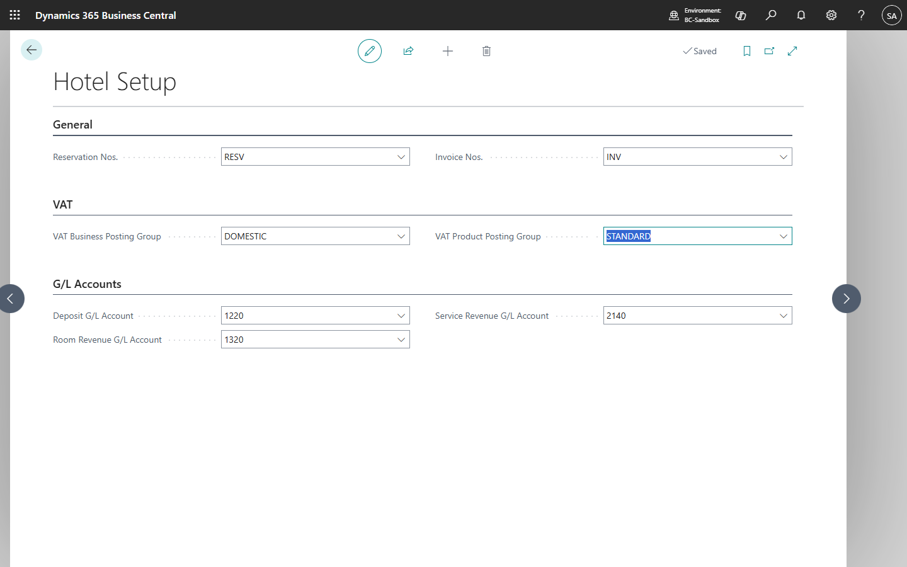
Opus 4.7 · run 0Pass

trigger OnInsert()
begin
if "Reservation No." = '' then begin
"No. Series" := GetNoSeriesCode();
"Reservation No." := NoSeries.GetNextNo("No. Series");
end;field(2; "Reservation Nos."; Code[20]) { TableRelation = "No. Series"; }
field(3; "Room Charge Item No."; Code[20]) { TableRelation = Item."No."; }SalesHeader.Validate("Document Type", SalesHeader."Document Type"::Invoice);
SalesHeader.Insert(true); // Assigns Document No. from Sales invoice no. series›F-02A Reservation table exists carrying the minimum reservation data and a status field.PassPassPass
Opus 4.7 · run 0Pass
table 50102 "Hotel Reservation" { field(1; "Reservation No."); field(10; "Customer No."); field(20; "Room No."); field(30; "Check-in Date"); field(31; "Check-out Date"); field(40; Status; Enum "Hotel Reservation Status"); field(50; "Deposit Amount"); field(60; "Invoice No."); ... }Opus 4.7 · run 0Pass
field(1; "No."); field(10; "Customer No."); field(20; "Room No."); field(30; "Check-in Date"); field(31; "Check-out Date"); field(40; Status; Enum "Hotel Reservation Status"); field(50; "Deposit Amount"); field(60; "Invoice No.")Opus 4.7 · run 0Pass
field(1; "Reservation No."; Code[20])
field(2; "Customer No."; Code[20])
field(4; "Room No."; Code[20])
field(5; "Check-In Date"; Date)
field(6; "Check-Out Date"; Date)
field(7; "Status"; Enum "Hotel Reservation Status")
field(8; "Deposit Amount"; Decimal)
field(11; "Invoice No."; Code[20])›F-03A Room inventory table exists carrying the minimum room data and an occupancy flag.PassPassPass
Opus 4.7 · run 0Pass
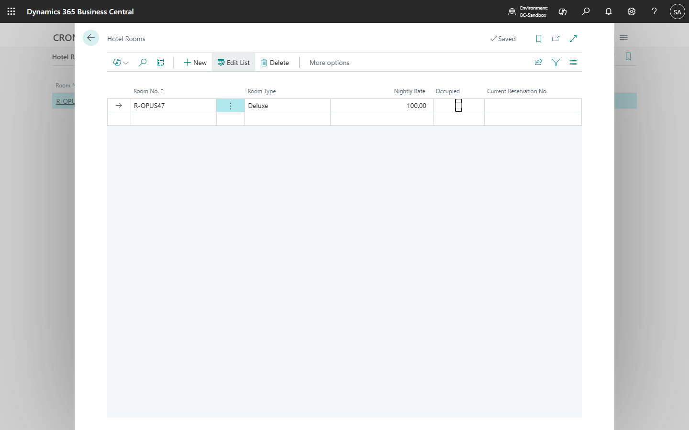
table 50101 "Hotel Room" { field(1; "Room No."); field(10; "Room Type"; Enum "Hotel Room Type"); field(20; "Nightly Rate"; Decimal); field(30; Occupied; Boolean); }Opus 4.7 · run 0Pass
field(1; "No."); field(10; "Room Type"); field(20; "Nightly Rate"); field(30; Occupied; Boolean)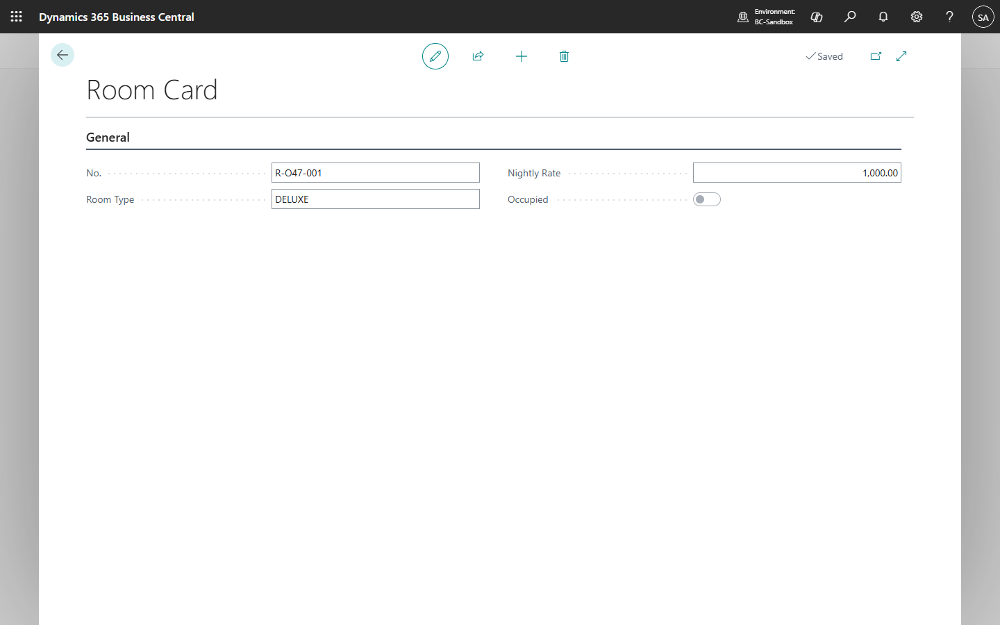
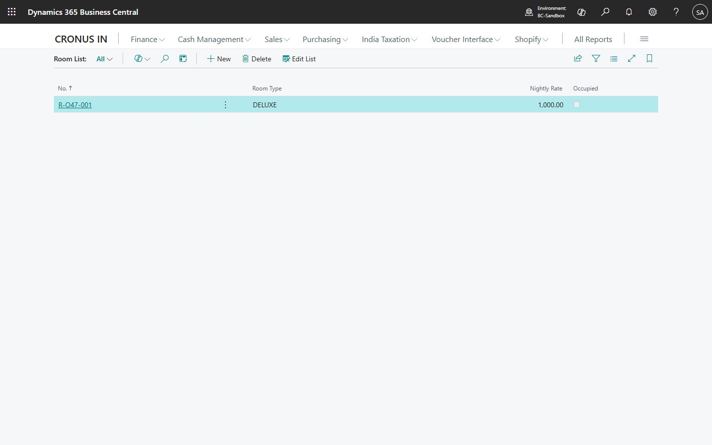
Opus 4.7 · run 0Pass
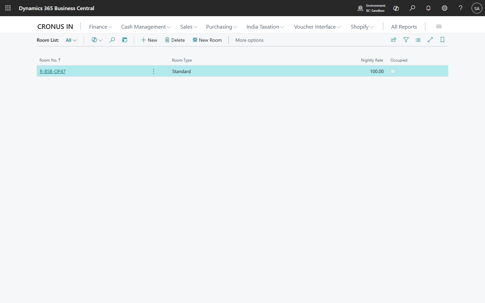
field(1; "Room No."; Code[20])
field(2; "Room Type"; Enum "Room Type")
field(3; "Nightly Rate"; Decimal)
field(4; "Occupied"; Boolean)›F-04A reservation can be created with a room assigned and an initial Confirmed status.FailPassPass
Opus 4.7 · run 0Fail
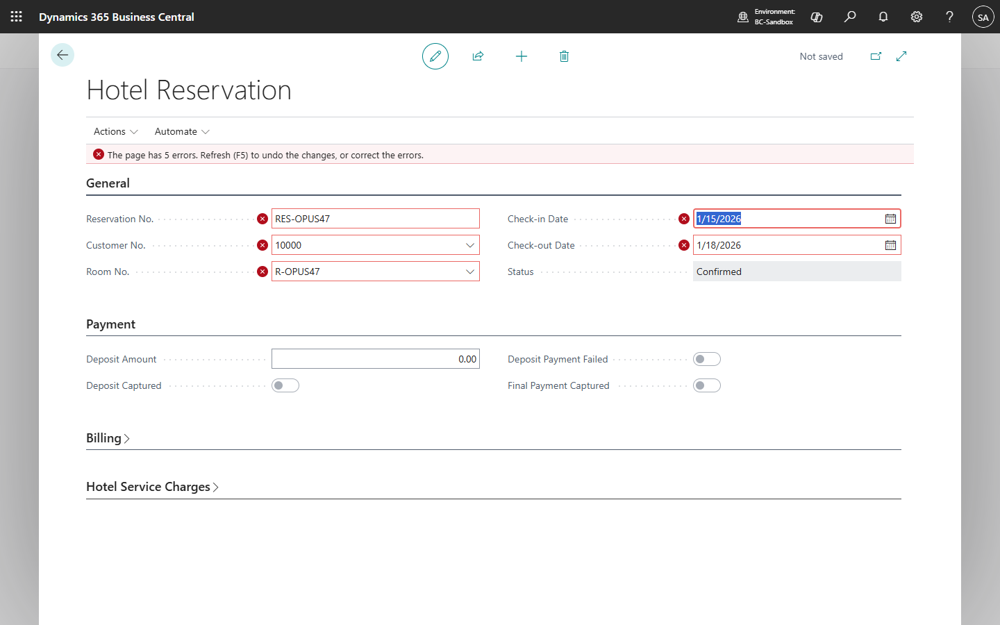
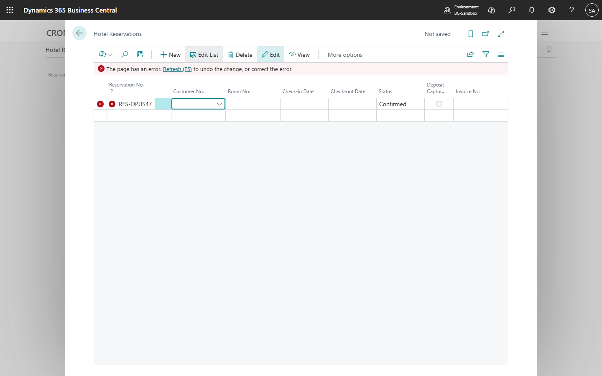

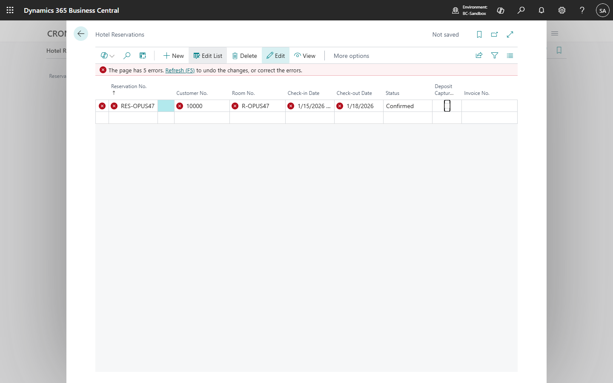
trigger OnInsert()
begin
if Status = Status::Closed then Error(...);
Status := Status::Confirmed;
TestMandatoryFields();
end;
local procedure TestMandatoryFields()
begin
TestDateRange();
if "Customer No." = '' then Error('Customer No. must be specified.');
if "Room No." = '' then Error('Room No. must be specified.');
end;Opus 4.7 · run 0Pass
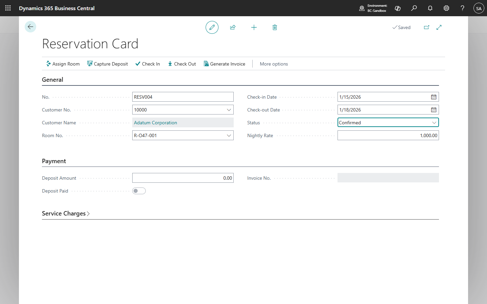
"No." := NoSeries.GetNextNo(HotelSetup."Reservation Nos.", WorkDate());
Status := Status::Confirmed;Opus 4.7 · run 0Pass
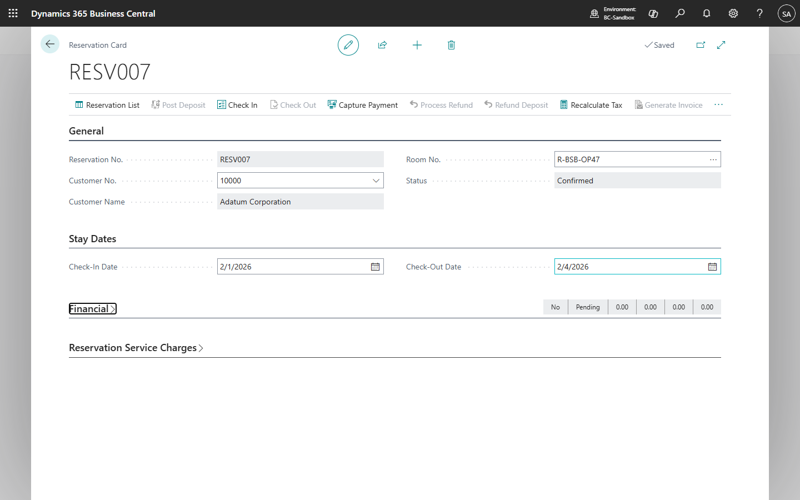
trigger OnNewRecord(BelowxRec: Boolean)
begin
Rec."Status" := "Hotel Reservation Status"::Confirmed;
end;›F-05Overbooking is prevented when a room is reserved for dates overlapping an existing active reservation.FailPassPass
Opus 4.7 · run 0Fail
procedure IsRoomAvailable(...): Boolean
begin
Reservation.SetRange("Room No.", RoomNo);
Reservation.SetFilter(Status, '<>%1', Reservation.Status::Closed);
if Reservation.FindSet() then repeat
if Reservation."Reservation No." <> ExcludeReservationNo then
if (Reservation."Check-in Date" < CheckOutDate) and (Reservation."Check-out Date" > CheckInDate) then
exit(false);
until Reservation.Next() = 0; exit(true); end;Opus 4.7 · run 0Pass
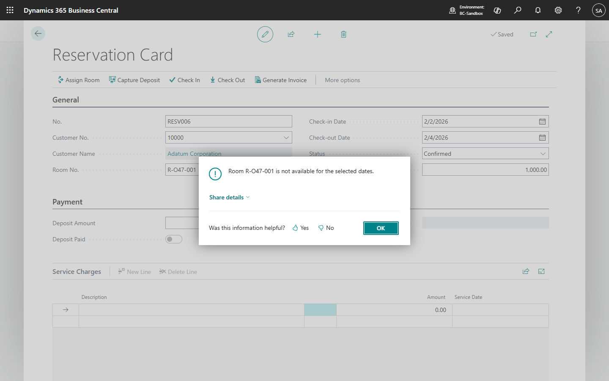
ExistingReservation.SetRange("Room No.", RoomNo);
ExistingReservation.SetFilter("No.", '<>%1', CurrentReservationNo);
ExistingReservation.SetFilter(Status, '<>%1', ExistingReservation.Status::Closed);
if (CheckInDate < ExistingReservation."Check-out Date") and (CheckOutDate > ExistingReservation."Check-in Date") then exit(false);Opus 4.7 · run 0Pass
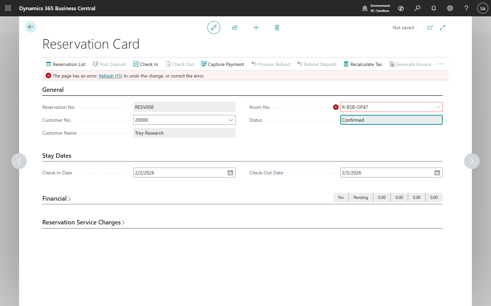
procedure CheckAvailabilityOrError(...)
...
if not CheckAvailability(...) then
Error('Overbooking prevented: Room %1 is already reserved by another guest for a period that overlaps %2 to %3.\\...'›F-06A deposit can be captured against a reservation and its captured/failed state is tracked.FailPassPass
Opus 4.7 · run 0Fail
procedure CaptureDeposit(var Reservation; Amount; PaymentSucceeded; ExternalReference)
begin
Reservation.TestField(Status, Reservation.Status::Confirmed);
if Amount <= 0 then Error('Deposit amount must be positive.');
InsertPaymentLedger(...,Deposit,Amount,PaymentSucceeded,...);
Reservation."Deposit Captured" := PaymentSucceeded;
Reservation."Deposit Payment Failed" := not PaymentSucceeded;
end;Opus 4.7 · run 0Pass
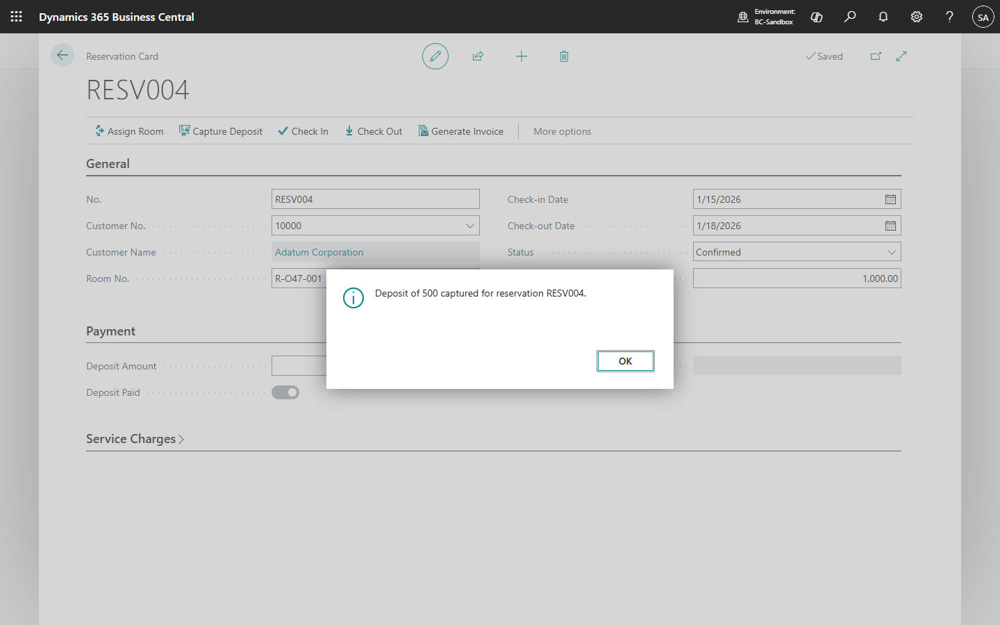
Reservation.TestField("Deposit Amount");
if Reservation."Deposit Paid" then Error('Deposit has already been captured ...');
GenJnlLine.Amount := -Reservation."Deposit Amount";
GenJnlLine.Insert(true);
Reservation."Deposit Paid" := true;Opus 4.7 · run 0Pass
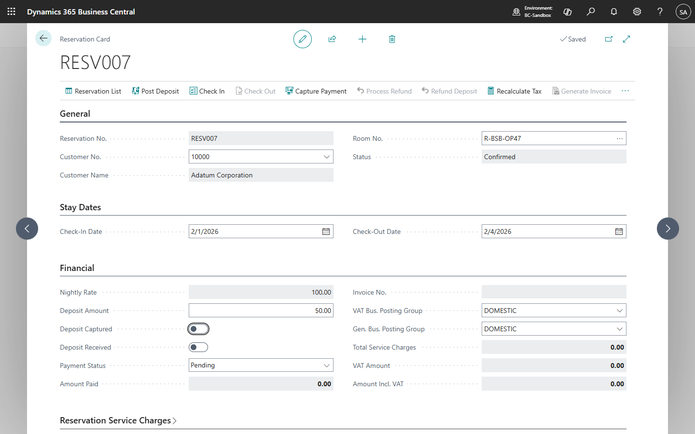
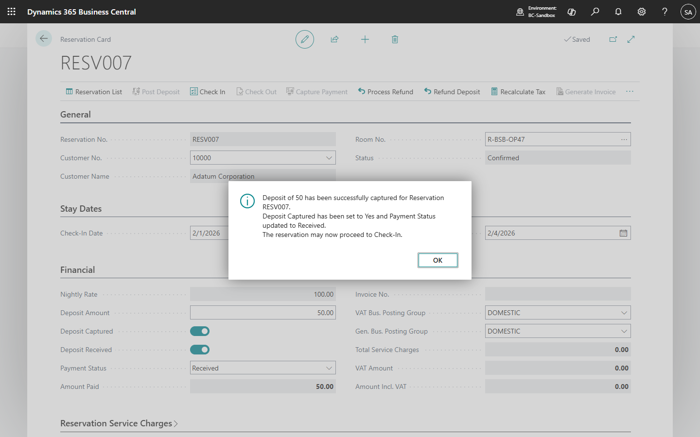
if CaptureSucceeded then begin
ReservationHeader.Validate("Deposit Captured", true);
ReservationHeader.Validate("Payment Status", "Hotel Payment Status"::Received);
end else begin
ReservationHeader.Validate("Payment Status", "Hotel Payment Status"::Failed);
Error('Deposit capture FAILED ...');›F-07Check-in transitions the reservation to Occupied and marks the assigned room occupied.FailPassPass
Opus 4.7 · run 0Fail
procedure CheckIn(var Reservation)
begin
Reservation.TestField(Status, Reservation.Status::Confirmed);
Reservation.TestField("Deposit Captured", true);
...
Room.Occupied := true;
Room.Modify(true);
Reservation.Status := Reservation.Status::Occupied;
Reservation.Modify(true);
end;Opus 4.7 · run 0Pass
if Reservation.Status <> Reservation.Status::Confirmed then Error('Only confirmed reservations can be checked in.');
if not Reservation."Deposit Paid" then Error('Deposit must be paid before check-in.');
Room.Get(Reservation."Room No.");
Room.SetOccupied(true);
Reservation.Status := Reservation.Status::Occupied;Opus 4.7 · run 0Pass
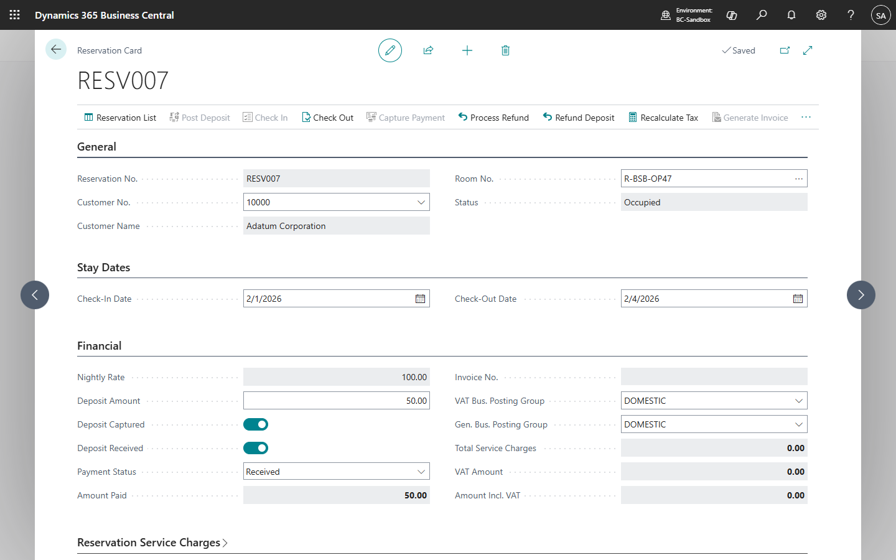
ReservationHeader.Validate(Status, "Hotel Reservation Status"::Occupied);
ReservationHeader.Modify(true);if NewRoomNo <> '' then
if Room.Get(NewRoomNo) then begin
Room.Occupied := IsRoomCurrentlyOccupied(...);
Room.Modify();
end;›F-08Service charge lines (e.g. breakfast, laundry, transfer) can be stored against a reservation.FailPassPass
Opus 4.7 · run 0Fail
table 50103 "Hotel Service Charge" { field(1; "Reservation No."; TableRelation = "Hotel Reservation"); field(10; "Service Type"; Enum "Hotel Service Type"); field(30; Amount; Decimal); field(40; Billable; Boolean) { InitValue=true; } }Opus 4.7 · run 0Pass
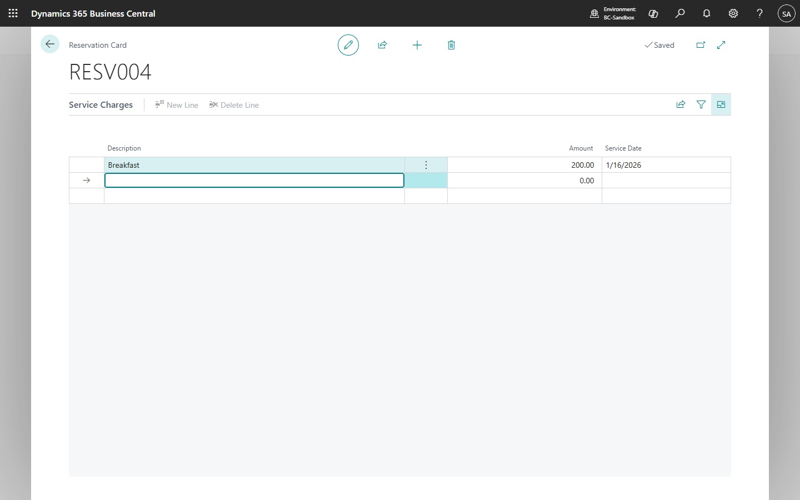
field(1; "Reservation No."; Code[20]) { TableRelation = Reservation; }
field(10; Description; Text[100]) // service type label
field(20; Amount; Decimal) { MinValue = 0; }
field(30; "Service Date"; Date)Opus 4.7 · run 0Pass UI navigation failed
field(1; "Reservation No."; Code[20]) { TableRelation = "Reservation Header"."Reservation No."; NotBlank = true; }
field(3; "Description"; Text[100])
field(5; "Unit Price"; Decimal)
field(6; "Amount"; Decimal)
field(10; "Service Type"; Enum "Hotel Service Type")page 50113 "Reservation Service Charges" { PageType = ListPart; SourceTable = "Reservation Service Charge"; ... SubPageLink = "Reservation No." = field("Reservation No.") }›F-09Checkout generates a single invoice, calculates VAT, posts the financial result, closes the reservation and releases the room.FailFailFail
Opus 4.7 · run 0Fail
procedure Checkout(var Reservation) begin Reservation.TestField(Status, Reservation.Status::Occupied); Room.Occupied := false; Reservation.Status := Reservation.Status::Closed; Reservation.Modify(true); end;
procedure GenerateInvoice(...) begin ...; SalesHeader.Init(); SalesHeader."Document Type" := ...::Invoice; SalesHeader.Insert(true); ... SalesLine.Insert(true); SalesLine.Validate(...); Reservation."Invoice No." := SalesHeader."No."; end; // SalesPost.Run is NEVER called0 — never calls a standard posting codeunitOpus 4.7 · run 0Fail
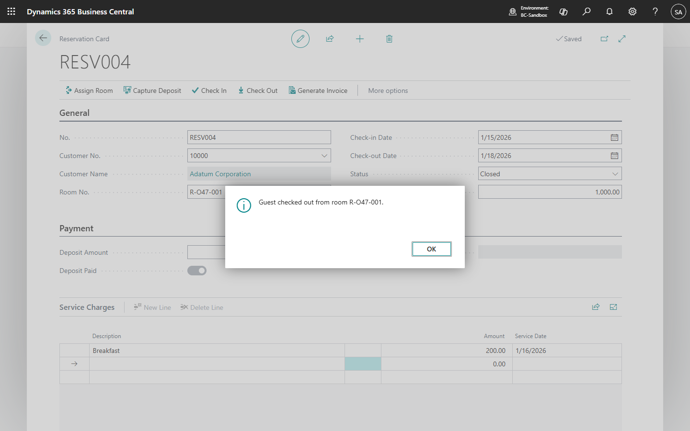
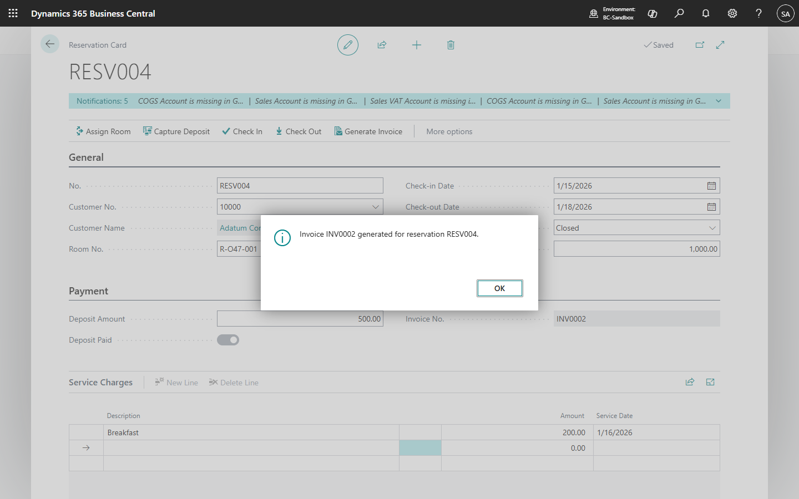
SalesHeader.Init();
SalesHeader."No." := NoSeries.GetNextNo(HotelSetup."Invoice Nos.", WorkDate());
SalesHeader.Insert(true);
// ... SalesLine.Insert(true) for room/services/deposit ...
Reservation."Invoice No." := SalesHeader."No.";
Reservation.Modify(true);
// NO SalesPost.Run / Codeunit.Run() called — invoice never posted0 matches — only Insert(true) calls; the candidate never invokes the BC posting codeunitOpus 4.7 · run 0Fail
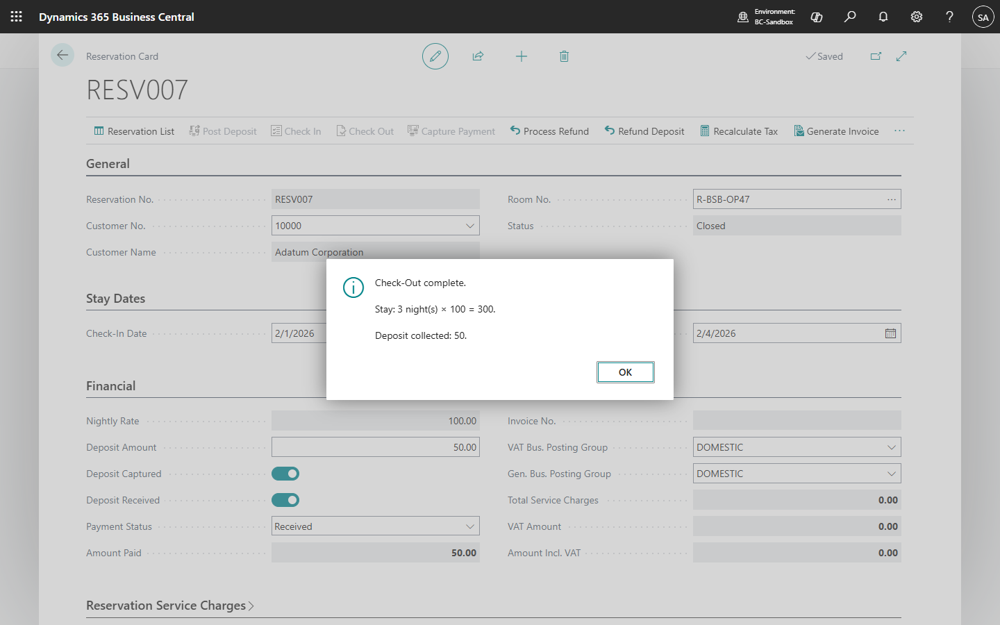
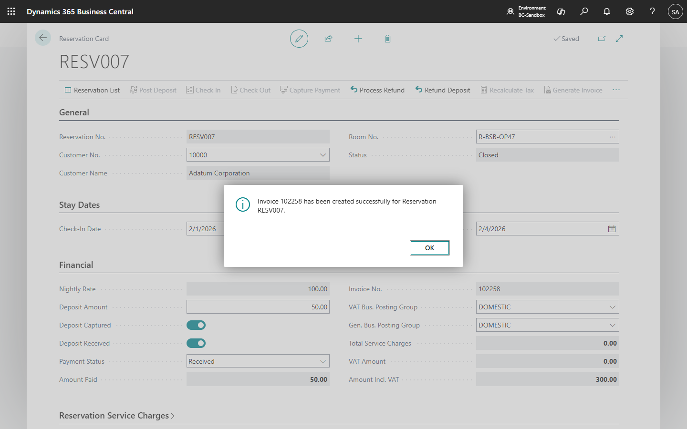
(no matches — invoice document is created via SalesHeader.Insert(true) but never POSTED via Codeunit::"Sales-Post".Run)SalesHeader.Init();
SalesHeader.Validate("Document Type", SalesHeader."Document Type"::Invoice);
SalesHeader.Insert(true);
...
ReservationHeader."Invoice No." := SalesHeader."No.";
ReservationHeader.Modify(true);›F-10VAT is recalculated when tax configuration changes before the invoice is generated.FailPassPass
Opus 4.7 · run 0Fail
procedure CalculateTotals(...) ... Setup.GetSetup(); ... VATAmount := Round(TaxableAmount * Setup."VAT Rate %" / 100, 0.01); ...Opus 4.7 · run 0Pass result not observable
SalesLine.Validate("No.", HotelSetup."Room Revenue G/L Account");
SalesLine.Validate("Unit Price", RoomAmount);
SalesLine."VAT Bus. Posting Group" := HotelSetup."VAT Business Posting Group";
SalesLine."VAT Prod. Posting Group" := HotelSetup."VAT Product Posting Group";Opus 4.7 · run 0Pass result not observable
procedure BulkRecalcUnInvoicedReservations(): Integer
...
ReservationHeader.SetRange("Invoice No.", '');
if ReservationHeader.FindSet(true) then
repeat
... CalcReservationVAT(ReservationHeader);
UpdatedCount += 1;
until ReservationHeader.Next() = 0;trigger OnModify()
...
VATSetupChanged := (Rec."VAT Prod. Posting Group" <> xRec."VAT Prod. Posting Group") or (Rec."Default Room VAT %" <> xRec."Default Room VAT %");
if not VATSetupChanged then exit;
...
UpdatedCount := HotelVATCalculation.BulkRecalcUnInvoicedReservations();›F-11The deposit is applied against the final bill and the remaining amount due is settled.FailFailFail
Opus 4.7 · run 0Fail
if Reservation."Deposit Captured" and (Reservation."Deposit Amount" <> 0) then
InsertSalesLine(..., Setup."Deposit Clearing G/L Account", 'Deposit applied ' + Reservation."Reservation No.", -Reservation."Deposit Amount", Setup);
// added as negative line on UNPOSTED Sales Invoice; no payment postingOpus 4.7 · run 0Fail
if Reservation."Deposit Paid" and (Reservation."Deposit Amount" > 0) then begin
SalesLine.Type := SalesLine.Type::"G/L Account";
SalesLine.Validate("No.", HotelSetup."Deposit G/L Account");
SalesLine.Description := 'Deposit Applied';
SalesLine.Validate("Unit Price", -Reservation."Deposit Amount");
SalesLine.Insert(true);
end;// No SalesPost.Run — the negative deposit line is added but the invoice is never posted, so the customer ledger is never settled.Opus 4.7 · run 0Fail
if ReservationHeader."Deposit Amount" > 0 then begin
if DepositIsCaptured then begin
SalesLine.Validate("No.", DepositItemNo);
...
SalesLine.Validate("Unit Price", -ReservationHeader."Deposit Amount");
SalesLine.Insert(true);(no matches — no posting step that would settle the remaining balance)›C-01All custom objects fall within a single declared object-ID range registered in app.json.PassPassPass
Opus 4.7 · run 0Pass
"idRanges": [ { "from": 50100, "to": 99999 } ]All object IDs 50100-50106 (tables/pages/codeunits/enums/permissionsets) — all within declared 50100-99999 rangeOpus 4.7 · run 0Pass
"idRanges": [{"from": 50100, "to": 99999}]All custom object IDs are 50100-50105 (Cod 50100-50102, Pag 50100-50105, Tab 50100-50103, Enum 50100, PagExt 50100, TabExt 50100) — all within declared idRangeOpus 4.7 · run 0Pass
"idRanges": [ { "from": 50100, "to": 99999 } ]all custom objects use IDs 50100-50113, well within the declared 50100-99999 range›C-02User-facing page fields carry ToolTips.FailPassPass
Opus 4.7 · run 0Fail
0 ToolTip declarations across all page fieldsOpus 4.7 · run 0Pass
45 ToolTip declarations vs 40 page field declarations → every user-facing field has a ToolTip (≥100% coverage)Opus 4.7 · run 0Pass
RoomList=5/4 fields, RoomCard=5/4, ReservationList=21/13, ReservationCard=30/21, RoomLookup=4/4, HotelSetup=9/7, ReservationServiceCharges=13/11 — ToolTip on essentially every visible page field, ratio >> 80%›C-03Table fields declare a DataClassification.PassPassPass
Opus 4.7 · run 0Pass
7 DataClassification declarations — 6 at table level (Hotel Setup/Room/Reservation/Service Charge/Payment Ledger/User Role Setup all 'CustomerContent') + 1 field-level ('Authorized User ID'=EndUserIdentifiableInformation). Table-level inherits to all fields per BC rules, so 100% of fields are non-default.Opus 4.7 · run 0Pass
33 DataClassification declarations / 30 table-field declarations → every field declares DataClassification = CustomerContentOpus 4.7 · run 0Pass
Room=5(1 table+4 fields)/4; ReservationHeader=20(table+~19)/21 (FlowField field 18 omitted); HotelSetup=9/8; ReservationServiceCharge=16/15; cue tables: only the Code field is non-FlowField and carries DC. All regular custom table fields declare DataClassification.›C-04Numbering and posting reuse standard BC platform modules rather than bespoke implementations.FailFailFail
Opus 4.7 · run 0Fail
0 — No. Series module never invoked0 — no standard posting codeunit callsSalesHeader.Init(); SalesHeader."Document Type" := SalesHeader."Document Type"::Invoice; SalesHeader.Insert(true); ... SalesHeader.Modify(true); // no SalesPost.Run(SalesHeader)Opus 4.7 · run 0Fail
NoSeries: Codeunit "No. Series";
"No." := NoSeries.GetNextNo(HotelSetup."Reservation Nos.", WorkDate());NoSeries: Codeunit "No. Series";
SalesHeader."No." := NoSeries.GetNextNo(HotelSetup."Invoice Nos.", WorkDate());0 matches — the standard posting codeunits (Sales-Post, Gen. Jnl.-Post Line) are NEVER invokedOpus 4.7 · run 0Fail
NoSeries: Codeunit "No. Series";
...
"Reservation No." := NoSeries.GetNextNo("No. Series");(no matches — financial posting via standard posting codeunits is absent)›C-05Key lifecycle transitions expose integration events for extensibility.FailFailFail
Opus 4.7 · run 0Fail
0 IntegrationEvent / BusinessEvent declarationsOpus 4.7 · run 0Fail
0 matches — no [IntegrationEvent] / [BusinessEvent] declarations anywhere in the codebaseOpus 4.7 · run 0Fail
(no matches across any .al file)›C-06Operational outcomes emit telemetry via the platform session log.FailFailFail
Opus 4.7 · run 0Fail
0 Session.LogMessage / FeatureTelemetry callsOpus 4.7 · run 0Fail
0 matches — no Session.LogMessage / Telemetry callsOpus 4.7 · run 0Fail
(no matches across any .al file)›S-01The solution models all required domain tables: reservation, room inventory, and service charges.PassPassPass
Opus 4.7 · run 0Pass
table 50102 "Hotel Reservation" / table 50101 "Hotel Room" / table 50103 "Hotel Service Charge" — three distinct tablesOpus 4.7 · run 0Pass
table 50101 "Room" / table 50102 "Reservation" / table 50103 "Service Charge"Opus 4.7 · run 0Pass
Three distinct tables: Room (50100), Reservation Header (50101), Reservation Service Charge (50103).›S-02Reservation status is modelled as an enum with the required Confirmed, Occupied and Closed values.PassPassPass
Opus 4.7 · run 0Pass
enum 50100 "Hotel Reservation Status" { Extensible=true; value(0; Confirmed); value(1; Occupied); value(2; Closed); }field(40; Status; Enum "Hotel Reservation Status") { Caption='Status'; Editable=false; }Opus 4.7 · run 0Pass
enum 50100 "Hotel Reservation Status" { value(0; Confirmed); value(1; Occupied); value(2; Closed); }field(40; Status; Enum "Hotel Reservation Status")Opus 4.7 · run 0Pass
enum 50101 "Hotel Reservation Status" {
value(0; "Confirmed")
value(1; "Occupied")
value(2; "Closed")
}field(7; "Status"; Enum "Hotel Reservation Status")›S-03Distinct permission sets reflect the Front Desk, Finance and Admin roles.PassFailPass
Opus 4.7 · run 0Pass
permissionset 50100 "HOTEL FRONT DESK" { ...tabledata "Hotel Reservation"=RIMD, tabledata "Hotel Service Charge"=RIMD, NO Sales Header access }; permissionset 50101 "HOTEL FINANCE" { ...tabledata "Sales Header"=RIMD, tabledata "Sales Line"=RIMD, codeunit "Hotel Security Mgt."=X }; permissionset 50102 "HOTEL ADMIN" { tabledata "Hotel Setup"=RIMD, tabledata "Hotel User Role Setup"=RIMD }Opus 4.7 · run 0Fail
no matches — the submission ships ZERO permissionset objectsprocedure CanProcessRefund(): Boolean
var UserSetup: Record "User Setup";
begin
if UserSetup.Get(UserId) then exit(UserSetup."Allow Refund Processing");
exit(false);
end;Opus 4.7 · run 0Pass
HOTEL-ADMIN (RIMD on all + admin pages); HOTEL-FRONTDESK (Room RIM, Hotel Setup R only, no Process Refund codeunit); HOTEL-FINANCE (Hotel Setup RIMD, Process Refund codeunit included, Room R only)›S-04Deposit and payment handling is modelled including application of the deposit to the final bill.PassPassPass
Opus 4.7 · run 0Pass
Hotel Reservation field(50; "Deposit Amount"); field(51; "Deposit Captured"; Boolean); field(52; "Deposit Payment Failed"; Boolean); ... GenerateInvoice: if Reservation."Deposit Captured" and (Reservation."Deposit Amount" <> 0) then InsertSalesLine(...negative amount...)Opus 4.7 · run 0Pass
field(50; "Deposit Amount"; Decimal) { MinValue = 0; }
field(51; "Deposit Paid"; Boolean) { Editable = false; }if Reservation."Deposit Paid" and (Reservation."Deposit Amount" > 0) then begin
SalesLine.Validate("No.", HotelSetup."Deposit G/L Account");
SalesLine.Validate("Unit Price", -Reservation."Deposit Amount");
SalesLine.Insert(true);
end;Opus 4.7 · run 0Pass
field(8; "Deposit Amount"; Decimal)
field(12; "Deposit Received"; Boolean)
field(19; "Deposit Captured"; Boolean)
field(20; "Amount Paid"; Decimal)if ReservationHeader."Deposit Amount" > 0 then begin
if DepositIsCaptured then begin
SalesLine.Validate("Unit Price", -ReservationHeader."Deposit Amount");
SalesLine.Insert(true);›S-05All four named negative cases are explicitly handled: overbooking, failed payment, duplicate invoice and unauthorized refund.PassFailPass
Opus 4.7 · run 0Pass
procedure TestRoomAvailable(...) begin if not IsRoomAvailable(...) then Error('Room %1 is already assigned to an overlapping reservation.', RoomNo); end; // overbooking guardif not PaymentSucceeded then Message('Deposit payment failed...') // failed payment is tracked as Deposit Captured=false + Deposit Payment Failed=trueif Reservation."Invoice No." <> '' then Error('Invoice %1 has already been generated for reservation %2.', ...); // duplicate-invoice guardcodeunit "Hotel Security Mgt." procedure RequireFinance begin if not IsFinanceUser() then Error('Refund processing is restricted to Finance and Admin hotel roles.'); end; ProcessRefund: SecurityMgt.RequireFinance(); // unauthorized refund guardOpus 4.7 · run 0Fail
CheckRoomAvailability — overbooking guardif Reservation."Invoice No." <> '' then Error('Invoice has already been generated for this reservation.');ProcessRefund: if not PermissionMgt.CanProcessRefund() then Error('You do not have permission to process refunds.');0 matches — CaptureDeposit unconditionally sets Deposit Paid = true after Insert; there is no failed-payment branch or guardOpus 4.7 · run 0Pass
Error('Overbooking prevented: Room %1 is already reserved ...'if Failed: Payment Status := Failed; Error('Deposit capture FAILED ...')if ReservationHeader."Invoice No." <> '' then
Error('Invoice generation is blocked for Reservation %1: invoice %2 has already been generated. Duplicate invoices are not permitted.'HotelPermissionMgt.CheckRefundPermission(); ... if not HasFinancePermission() then Error('Access denied. Processing refunds is restricted to ... HOTEL-FINANCE or HOTEL-ADMIN ...')›S-06The submission stays within the spec's scope without adding unrelated modules.PassPassPass
Opus 4.7 · run 0Pass
All 18 objects (5 enums + 6 tables + 2 codeunits + 5 pages + 3 permissionsets) map to hotel/reservation/billing/security scope; no unrelated modulesOpus 4.7 · run 0Pass
17 objects: Hotel Setup, Room, Reservation, Service Charge, Reservation Status enum, Reservation Mgmt/Invoice Mgmt/Permission Mgmt codeunits, User Setup ext — all within scopeOpus 4.7 · run 0Pass
All 35 objects map cleanly to reservation, room, deposit/payment, service charge, billing/tax or security scope. Two cue/role-center pages are scope-adjacent (operational UX) but not out-of-scope.›P-01Lifecycle actions validate the current reservation status before executing and block illegal transitions.FailPassPass
Opus 4.7 · run 0Fail
CheckIn: Reservation.TestField(Status, Reservation.Status::Confirmed);
Checkout: Reservation.TestField(Status, Reservation.Status::Occupied);
GenerateInvoice: Reservation.TestField(Status, Reservation.Status::Closed);Opus 4.7 · run 0Pass
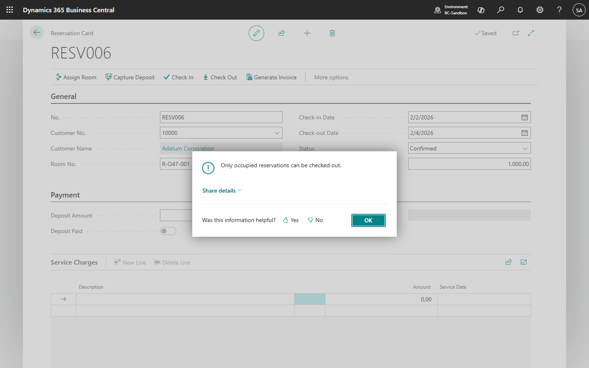
CheckIn: if Status <> Status::Confirmed then Error('Only confirmed reservations can be checked in.');
CheckOut: if Status <> Status::Occupied then Error('Only occupied reservations can be checked out.');
GenerateInvoice: if Status <> Status::Closed then Error('Reservation must be closed before generating an invoice.');Opus 4.7 · run 0Pass
if ReservationHeader.Status <> "Hotel Reservation Status"::Confirmed then
Error('Check-In is only allowed for reservations with status Confirmed. Current status: %1.', ReservationHeader.Status);if ReservationHeader.Status <> "Hotel Reservation Status"::Occupied then
Error('Check-Out is only allowed for reservations with status Occupied. Current status: %1.', ReservationHeader.Status);if ReservationHeader.Status <> "Hotel Reservation Status"::Closed then
Error('An invoice can only be generated for a Closed reservation. Current status: %1.'›P-02Critical fields are validated (TestField or equivalent) before posting or state-change procedures run.FailPassPass
Opus 4.7 · run 0Fail
CheckIn: TestField(Status, Confirmed); TestField("Deposit Captured", true); TestField("Room No."); TestRoomAvailable(...);
GenerateInvoice: TestField(Status, Closed); TestField("Customer No."); Setup.TestField("Room Revenue G/L Account"); Setup.TestField("Service Revenue G/L Account"); Setup.TestField("VAT Bus. Posting Group"); Setup.TestField("VAT Prod. Posting Group");Opus 4.7 · run 0Pass
Reservation.TestField("Room No.");
Reservation.TestField("Check-in Date");
Reservation.TestField("Check-out Date");
Reservation.TestField("Deposit Amount");
Reservation.TestField("Customer No.");
HotelSetup.TestField("Invoice Nos."); ... TestField("VAT Business Posting Group");Opus 4.7 · run 0Pass
if ReservationHeader."Room No." = '' then Error('A Room must be assigned before checking in.');
if not Room.Get(ReservationHeader."Room No.") then Error('Room %1 does not exist.');
...
if Room.Occupied then Error('Room %1 is already occupied ...');
if ReservationHeader."Deposit Amount" > 0 then begin
if (not ReservationHeader."Deposit Captured") ... Error('Check-In is not allowed ... deposit ...');if ReservationHeader."Customer No." = '' then Error('A Customer No. must be assigned ...');
if ReservationHeader."Payment Status" = ::Failed then Error('Invoice generation is blocked ...');›P-03Money moves only through standard BC posting; no direct inserts into ledger tables and posted documents remain traceable.FailFailFail
Opus 4.7 · run 0Fail
SalesHeader.Init(); SalesHeader."Document Type" := SalesHeader."Document Type"::Invoice; SalesHeader.Insert(true); ... SalesLine.Insert(true); ... Reservation."Invoice No." := SalesHeader."No."; Reservation.Modify(true); // no SalesPost.Run / SalesPostYesNolocal procedure InsertPaymentLedger(...) var PaymentLedger: Record "Hotel Payment Ledger"; begin PaymentLedger.Init(); ... PaymentLedger.Insert(true); end; // direct insert into custom ledger; no G/L journal posting0Opus 4.7 · run 0Fail
GenJnlLine.Insert(true); // direct insert into journal table; no Codeunit "Gen. Jnl.-Post Line".Run(GenJnlLine) followsSalesHeader.Insert(true); // creates header
SalesLine.Insert(true); // creates lines (room, services, negative-deposit)
// no SalesPost.Run, no Codeunit::Sales-Post — invoice is left unpostedOpus 4.7 · run 0Fail
(no matches — no standard posting codeunits are invoked anywhere)Whole procedure: SalesHeader.Init/Insert(true); SalesLine.Insert(true); ReservationHeader."Invoice No." := SalesHeader."No." — but NO Codeunit::"Sales-Post".Run call ever happens.›P-04Every system-blocked action surfaces a user-readable error identifying what failed and why.PassPassPass
Opus 4.7 · run 0Pass
Error('Room %1 is already assigned to an overlapping reservation.', RoomNo);
Error('Deposit amount must be positive.');
Error('Invoice %1 has already been generated for reservation %2.', ...);
Error('Final payment amount %1 exceeds remaining amount due %2.', ...);
Error('Reservation %1 has an invalid date range.', ...);Opus 4.7 · run 0Pass
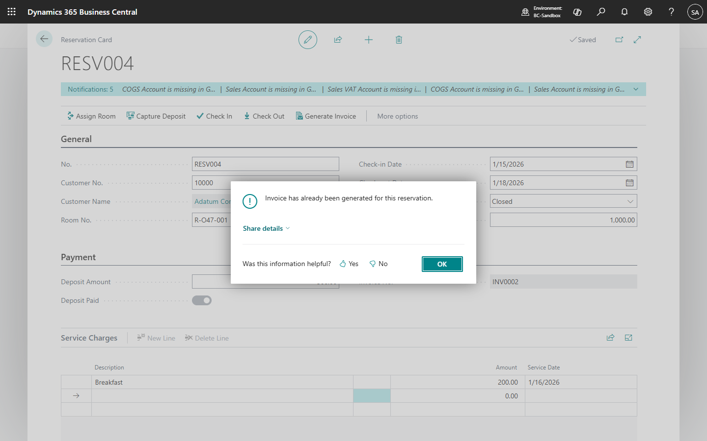
All Error() messages are human-readable strings referencing the room/reservation/rule, e.g. 'Room %1 is not available for the selected dates.', 'Deposit must be paid before check-in.', 'Invoice has already been generated for this reservation.'Opus 4.7 · run 0Pass
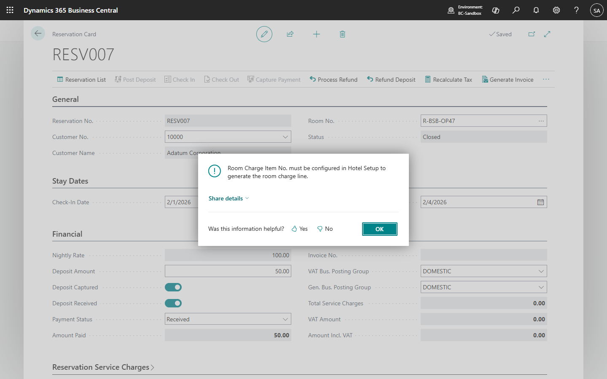
Error('Overbooking prevented: Room %1 is already reserved by another guest for a period that overlaps %2 to %3.\\Please choose a different room or adjust the Check-In / Check-Out dates ...')›P-05Real-world bad inputs are blocked: failed payment cannot report success, an invoice cannot be generated twice, and zero/negative amounts are rejected.FailFailPass
Opus 4.7 · run 0Fail
Deposit: if Amount <= 0 then Error('Deposit amount must be positive.');
Duplicate: if Reservation."Invoice No." <> '' then Error('Invoice %1 has already been generated...');
Final Payment: if Amount <= 0 then Error('Final payment amount must be positive.'); if Amount > AmountDue then Error(...);
Refund: if Amount <= 0 then Error('Refund amount must be positive.'); if not Reservation."Final Payment Captured" and not Reservation."Deposit Captured" then Error('There is no captured payment to refund...');Opus 4.7 · run 0Fail
if Reservation."Invoice No." <> '' then Error('Invoice has already been generated for this reservation.');// CaptureDeposit has no failure branch — sets Deposit Paid := true unconditionally after Insertfield(20; Amount; Decimal) { MinValue = 0; } // blocks negatives but allows zeroOpus 4.7 · run 0Pass
if ReservationHeader."Invoice No." <> '' then
Error('Invoice generation is blocked for Reservation %1: invoice %2 has already been generated. Duplicate invoices are not permitted.', ...);On simulated failure: Payment Status::Failed + hard Error — cannot be silently recorded as successif RefundAmount <= 0 then Error('Refund amount must be greater than zero...');
if RefundAmount > ReservationHeader."Amount Paid" then Error('The requested refund amount of %1 exceeds the total payment received of %2 ...');Deposit Amount MinValue = 0; Amount Paid MinValue = 0; Service Charge Quantity MinValue = 0; Unit Price MinValue = 0›P-06Refund processing is restricted to Finance and Front Desk is blocked from refund actions.PassFailPass
Opus 4.7 · run 0Pass
codeunit "Hotel Security Mgt."
procedure RequireFinance() begin if not IsFinanceUser() then Error('Refund processing is restricted to Finance and Admin hotel roles.'); end;
procedure IsFinanceUser(): Boolean begin if not RoleSetup.Get(UserSecurityId()) then exit(false); exit(RoleSetup.Role in [RoleSetup.Role::Finance, RoleSetup.Role::Admin]); end;
... ProcessRefund(...) begin SecurityMgt.RequireFinance(); ...;Opus 4.7 · run 0Fail
procedure ProcessRefund(InvoiceNo: Code[20])
var PermissionMgt: Codeunit "Permission Management";
begin
if not PermissionMgt.CanProcessRefund() then
Error('You do not have permission to process refunds. Only Finance role can perform this action.');
Message('Refund processed for invoice %1.', InvoiceNo);
end;Gate is a user-level boolean 'Allow Refund Processing' on User Setup, NOT a permission set. ProcessRefund is also not exposed via any page action.Opus 4.7 · run 0Pass
procedure CheckRefundPermission()
if not HasFinancePermission() then
Error('Access denied.\\Processing refunds is restricted to users with the ''HOTEL-FINANCE'' or ''HOTEL-ADMIN'' permission set.\\Front Desk users are not authorised to process refunds.')// UI layer: AccessByPermission = tabledata "Hotel Setup" = M (hides action from Front Desk)
// Code layer: HotelPermissionMgt.CheckRefundPermission() inside ProcessRefund codeunit// HOTEL-FRONTDESK permission set deliberately excludes the Process Refund codeunit and grants only R on Hotel Setup — third enforcement layer at the platform-permission level.›P-07The solution is organized into a conventional folder/file structure with one logical object per file.FailFailFail
Opus 4.7 · run 0Fail
Only one file: HotelManagement.al (1283 lines) containing 5 enums + 6 tables + 2 codeunits + 5 pages + 3 permissionsets — all dumped togetherOpus 4.7 · run 0Fail
All 16 files in single src/ folder — no separate subfolders for tables/pages/codeunits/enums/permissionsetsOpus 4.7 · run 0Fail
All 35 objects live in a single Src/ folder. Each file holds exactly one logical object with a descriptive name (e.g. Codeunit50100.HotelReservationMgt.al, Table50100.Room.al). However, there are NO dedicated subfolders for tables/pages/codeunits/enums/permissionsets — they all share Src/.Rental / Real Estate Management
Real-estate rental: projects, properties, lease contracts, recurring billing, signatory locking, termination.
Click any criterion to expand — each agent’s council verdict, individual grader votes, reasoning, and evidence (screenshots, OData queries, code).
›F-01Document numbering and posting G/L accounts are drawn from configurable setup (No. Series and G/L account setup), not hardcoded in business logic.FailFailPass
Opus 4.7 · run 0Fail
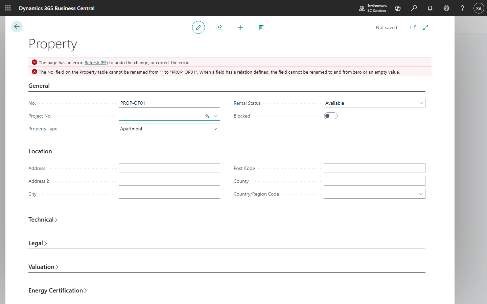
0 matches — codebase never calls NoSeries.GetNextNo anywheretrigger OnInsert()
var Project: Record "REM Project";
begin
if ("Project No." <> '') and Project.Get("Project No.") then begin
if "Payment Terms Code" = '' then "Payment Terms Code" := Project."Default Payment Terms Code"; ... end;
// NO NoSeries.GetNextNo call — "No." stays blank unless typed manuallyfield(3; "Property Nos."; Code[20]) { TableRelation = "No. Series"; }
field(4; "Contract Nos."; Code[20]) { TableRelation = "No. Series"; }
// setup fields exist but are never consumedOpus 4.7 · run 0Fail
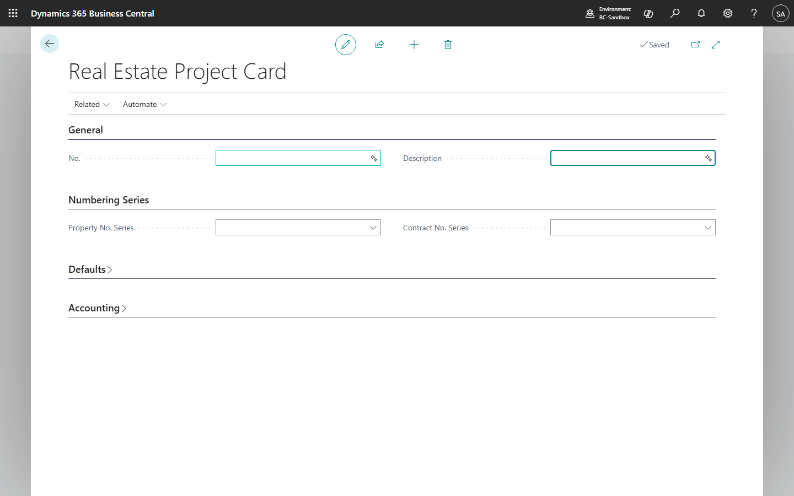
field(1; "No."; Code[20])
{
Caption = 'No.';
DataClassification = CustomerContent;
}field(1; "No."; Code[20])
{
Caption = 'No.';
DataClassification = CustomerContent;
}field(1; "No."; Code[20]) { ... } // no OnInsert / AssignNoSeriesOnly declaration 'NoSeriesMgt: Codeunit "No. Series"' in RentalManagement.Codeunit.al:190 (never called); no OnInsert anywhere except RentUpdateHistory AutoIncrementOpus 4.7 · run 0Pass
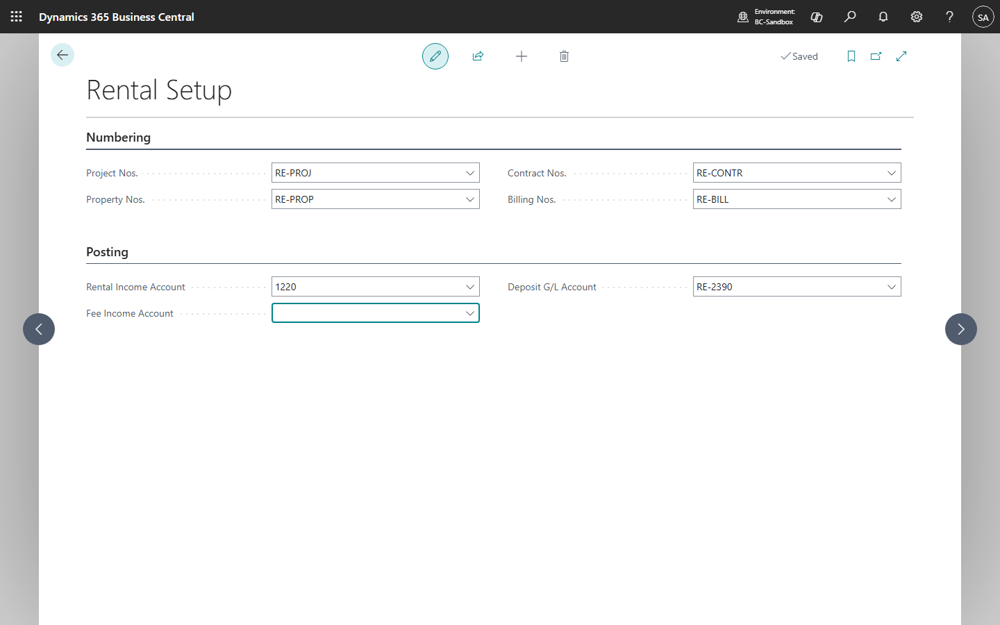
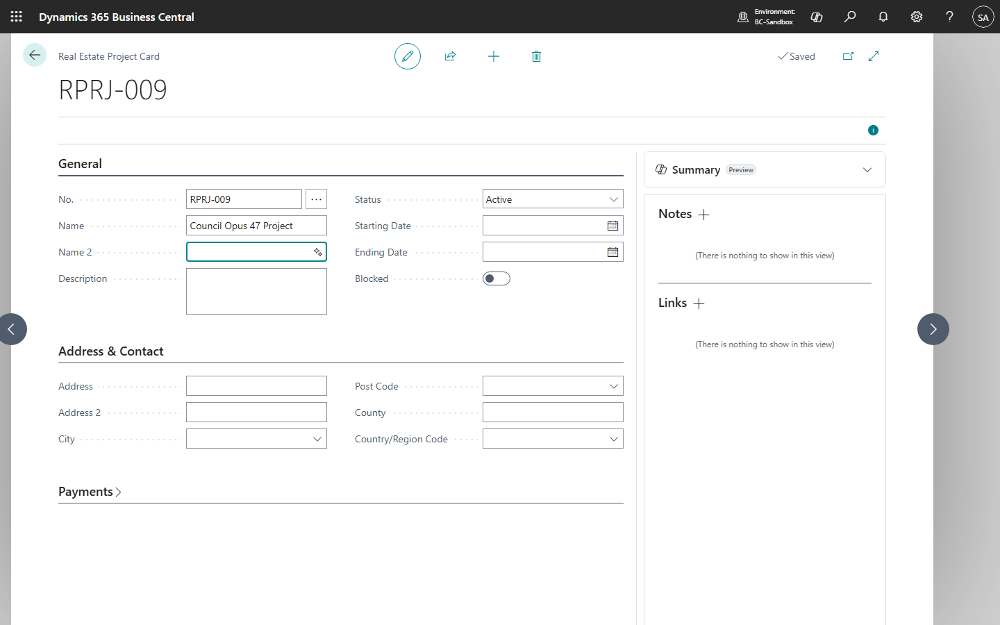
RealEstateProject."No. Series" := RentalSetup."Project Nos.";
RealEstateProject."No." := NoSeriesMgt.GetNextNo(RentalSetup."Project Nos.", WorkDate());DepositAccountCode := RentalContract."Deposit G/L Account";
if DepositAccountCode = '' then begin
GetRentalSetup(RentalSetup);
DepositAccountCode := RentalSetup."Deposit G/L Account";
end;BillingPeriodBuffer."G/L Account No." := RentalSetup."Rental Income Account";›F-02A Real Estate Project setup record can be created with project-level configuration defaults.PassPassFail
Opus 4.7 · run 0Pass
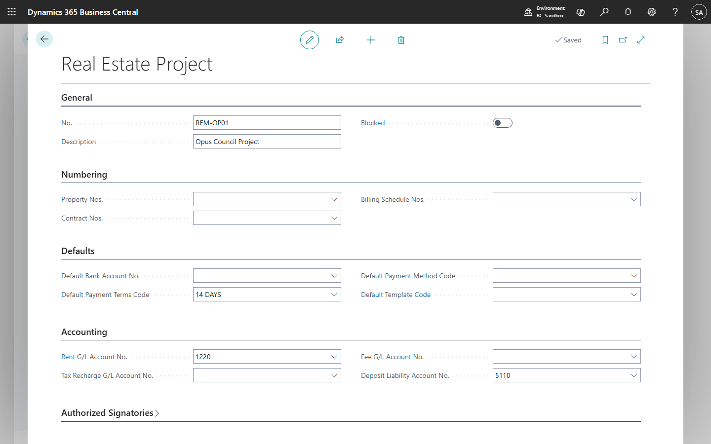
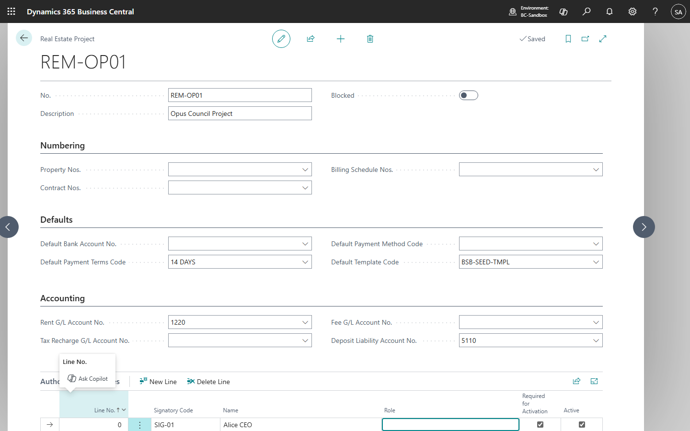
table 50100 "REM Project" { ... field(3; "Property Nos."; Code[20])... field(6; "Default Bank Account No."...); field(13; "Default Template Code"...) }Opus 4.7 · run 0Pass
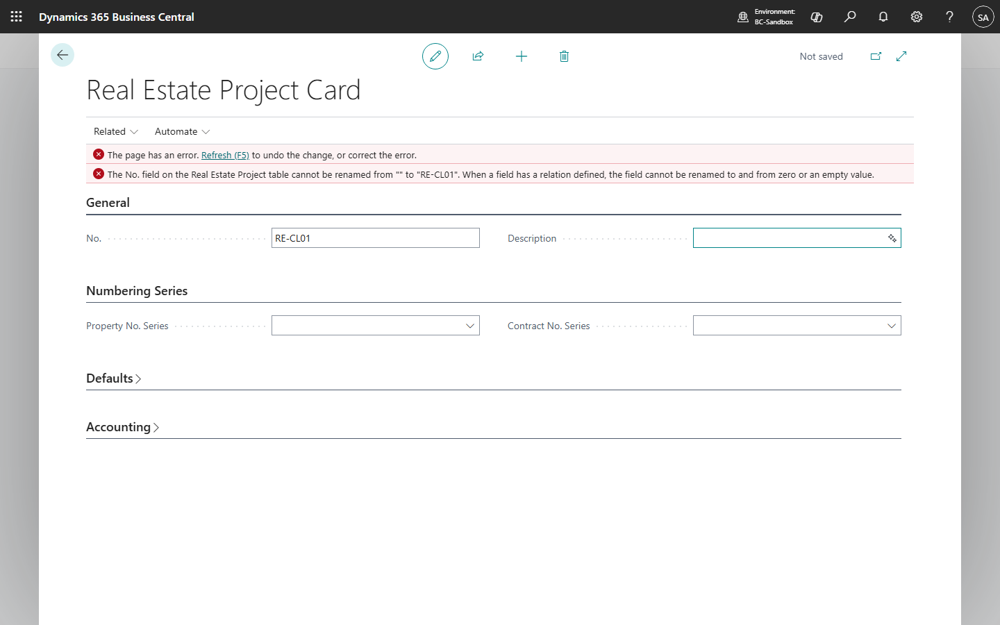
field(10; "Property No. Series"; ...) field(11; "Contract No. Series"; ...) field(20; "Default Bank Account"; ...) field(21; "Default Payment Method"; ...) field(22; "Default Payment Terms"; ...)action(Signatories) { ... RunObject = page "Contract Signatory List"; ... }
action(Templates) { ... RunObject = page "Contract Template List"; ... }Opus 4.7 · run 0Fail
field("Bank Account Code"; Rec."Bank Account Code")
field("Payment Method Code"; Rec."Payment Method Code")
field("Payment Terms Code"; Rec."Payment Terms Code")no Signatory or Contract Template association fields; only Bank/Payment fields›F-03A Property (rentable unit) card can be created with the minimum required property data.PassFailFail
Opus 4.7 · run 0Pass
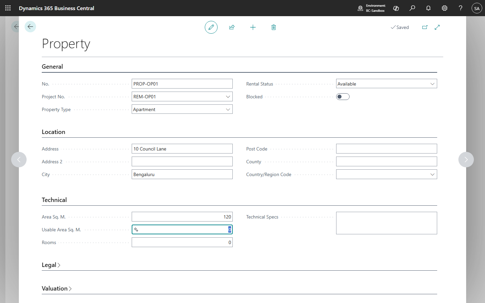
table 50103 "REM Property" { ... field(3; "Property Type"...); field(4; "Rental Status"...); field(11; "Area Sq. M."...); field(15; "Registry No."...); field(20; "Energy Rating"...) }Opus 4.7 · run 0Fail UI navigation failed
field(1; "No."; Code[20]) field(2; "Project No."; ...) field(10; "Property Type"; ...) field(11; "Rental Status"; ...) field(20; "Address"; ...) field(30; "Area (sqm)"; Decimal) field(40; "Registry Reference"; ...) field(60; "Energy Efficiency Rating"; ...) field(61; "Energy Certificate No."; ...)group(Location), group(Technical), group(Legal), group(Valuation), group(Energy), group(Tax) — all spec'd fields present on the cardOpus 4.7 · run 0Fail
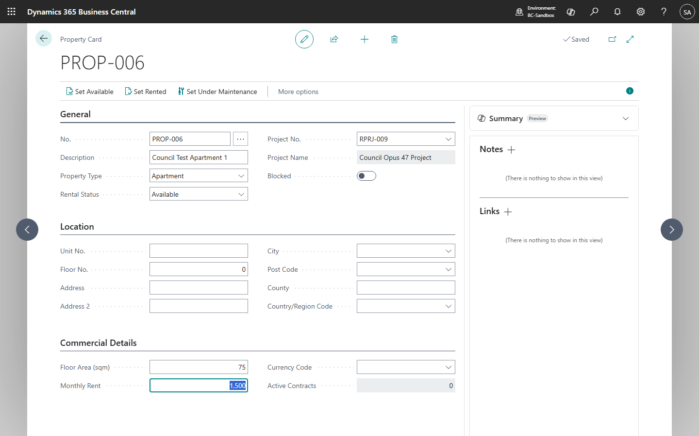
fields: No., Description, Property Type, Rental Status, Project No., Address fields, Floor Area, Floor No., Unit No., Monthly Rent, Currency Code — NO registry/legal data, NO energy-certification fields›F-04A lease contract can be created linking one or more properties and one or more tenants with its minimum contract data.PassFailPass
Opus 4.7 · run 0Pass
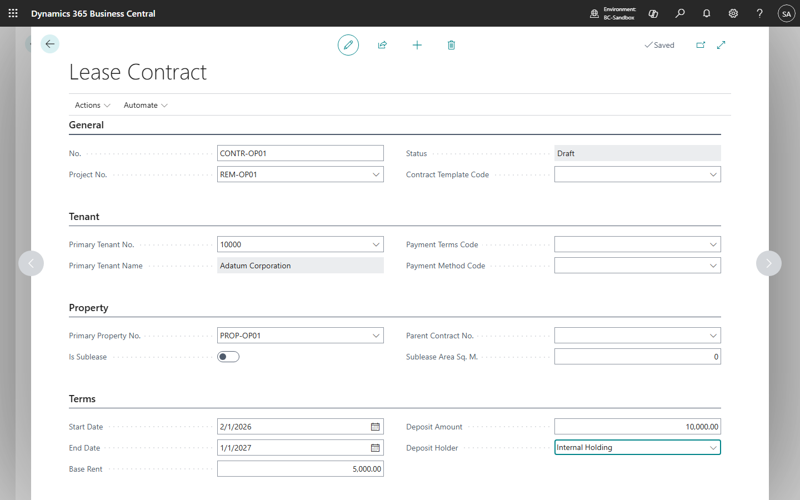
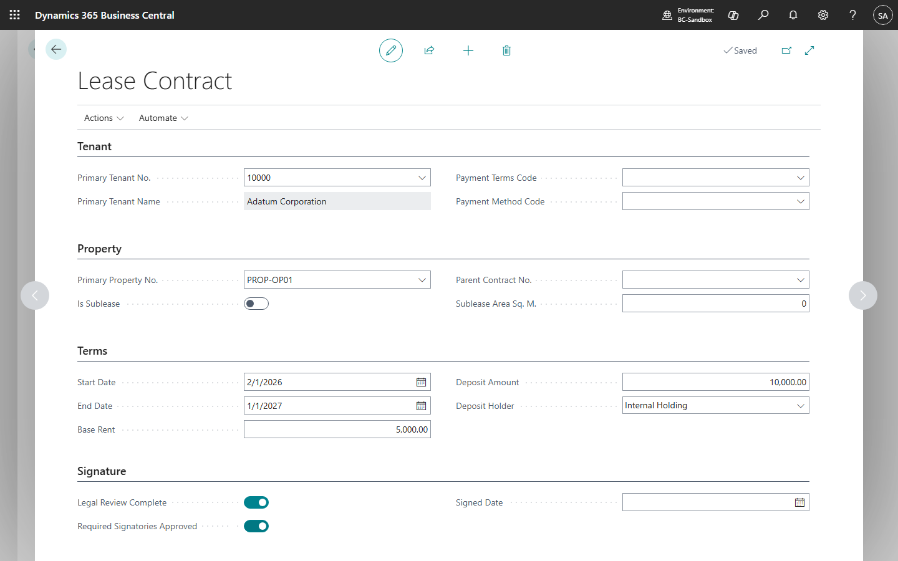
table 50104 "REM Contract" { ... Project No., Primary Tenant No., Primary Property No., Start/End Date, Status (enum, InitValue=Draft), Base Rent, Deposit Amount, Contract Template Code, Is Sublease, Parent Contract No. ... }Opus 4.7 · run 0Fail UI navigation failed
field(1; "No."; Code[20]) field(2; "Project No."; ...) field(3; "Tenant No."; TableRelation = Customer) field(10; "Start Date"; Date) field(11; "End Date"; Date) field(12; Status; Enum "Contract Status") field(20; "Base Rent"; Decimal) field(30; "Deposit Amount"; Decimal) field(50; "Contract Template Code"; ...)table 50103 "Contract Property" — sub-table linking many properties to one contract via Contract No.+Line No.+Property No.card with all groups (General, Dates, Financial, Deposit, Contract, Sublease, Tax) plus part(Properties) and part(BillingConcepts) subformsOpus 4.7 · run 0Pass
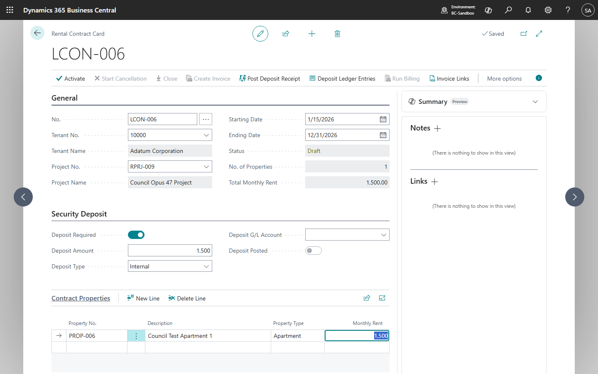
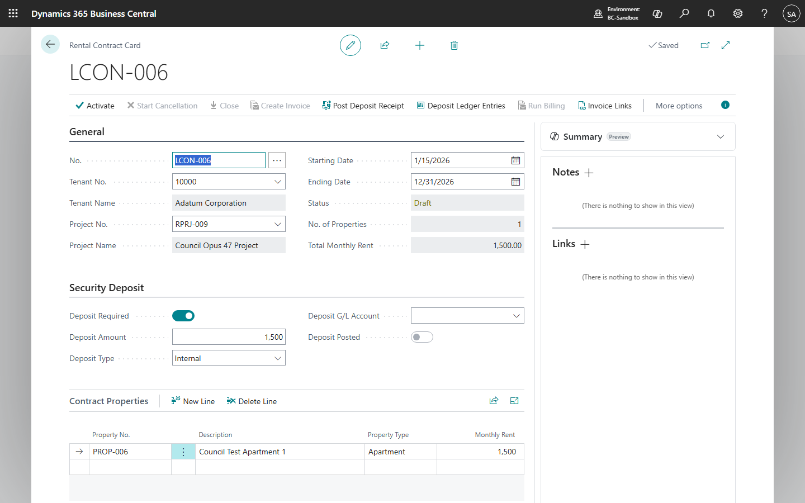
Status enum, Tenant No., Project No., Start/End dates, Deposit Amount/Type/G/L AccountContractLine.SetRange(...); if not IsEmpty() then Error(DuplicatePropertyErr,...);›F-05A contract transitions from Draft/Pending to Active only after signatory validation, and the linked property reflects the active lease.PassFailFail
Opus 4.7 · run 0Pass
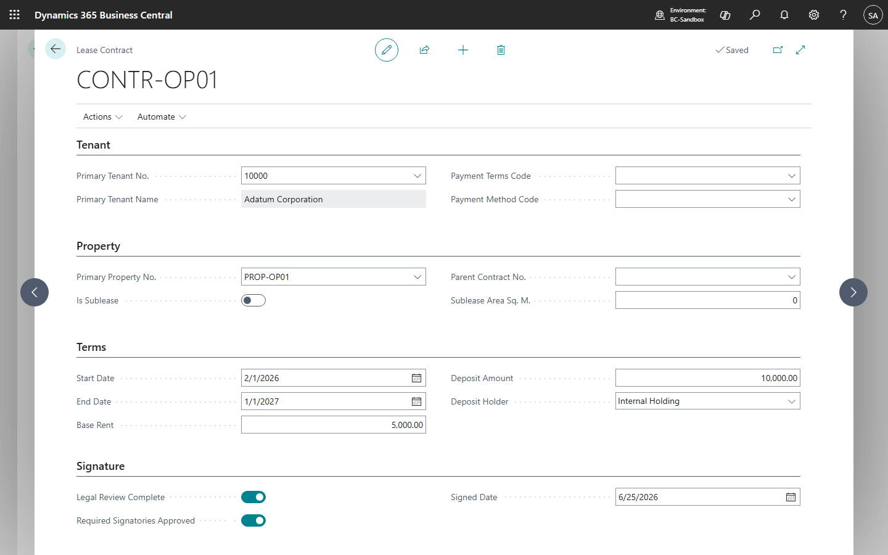
ValidateLegalReadiness: TestField on Project/Tenant/Property/Dates/Base Rent/Template, then Template.Get + Template.Active check and 'Required Signatories Approved' check; ActivateContract sets Status::Active and Property."Rental Status" := Leased.Opus 4.7 · run 0Fail UI navigation failed
ActivateContract: TestField('Tenant No.','Start Date','End Date','Base Rent'); if not 'Signatory Validated' then Error(SignatoryNotValidatedErr); ContractProperty.FindFirst check; CheckPropertyAvailability; Status := Active; Modify; loops Properties and sets 'Rental Status' := RentedSignatoryNotValidatedErr: Label 'Contract signatories must be validated before activation.';Opus 4.7 · run 0Fail
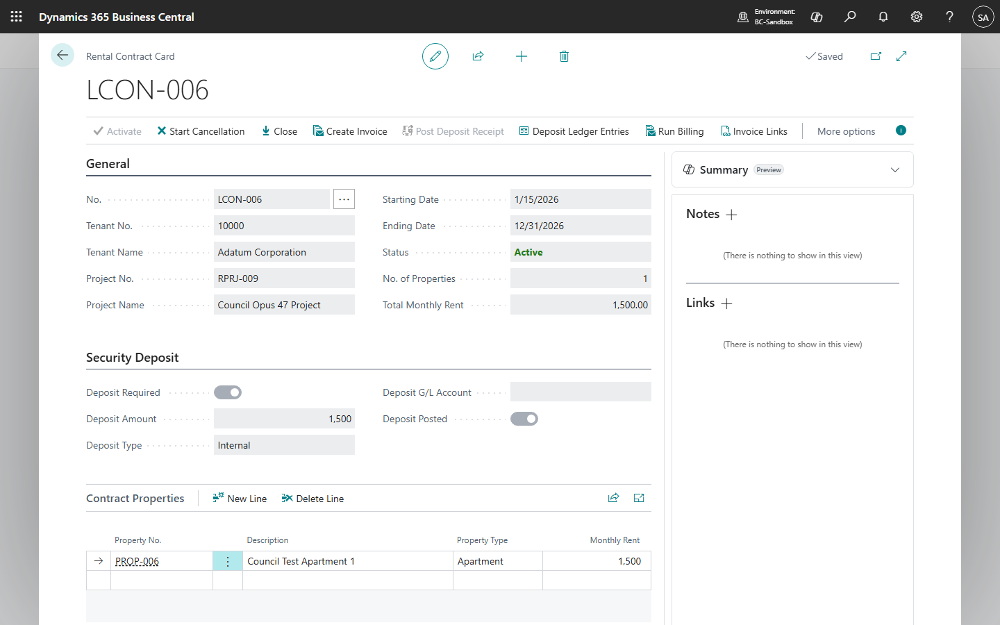
ActivateContract checks Status=Draft, Tenant<>'', dates set, lines exist, deposit posted if required — NO signatory validation, NO contract template gateif Property.Get(RentalContractLine."Property No.") then begin
Property."Rental Status" := Property."Rental Status"::Rented;
Property.Modify(true);
end;›F-06A security deposit can be captured on the contract and posted with the correct internal/external holding distinction.FailFailPass
Opus 4.7 · run 0Fail
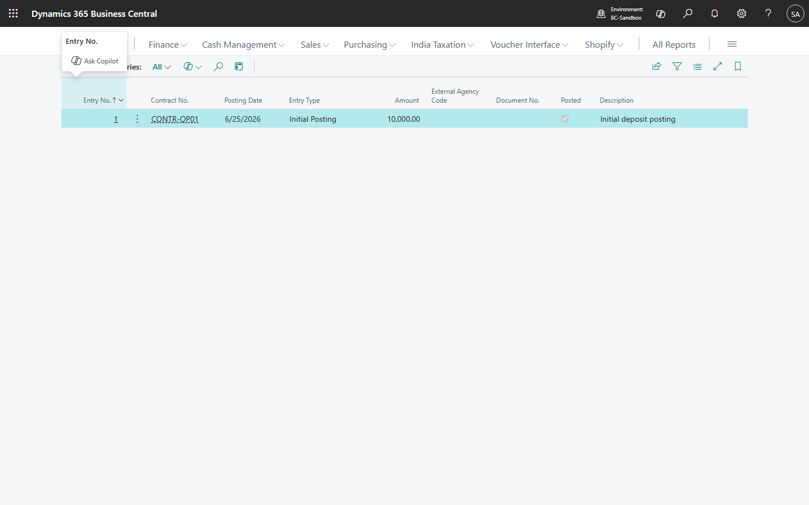
CreateDepositEntry: DepositEntry.Init(); DepositEntry."Contract No." := Contract."No."; ... DepositEntry.Amount := Amount; DepositEntry.Posted := true; DepositEntry.Insert(true); AuditMgt.LogEvent(...);
// NO GenJnlLine / GenJnlPostLine / standard postingOpus 4.7 · run 0Fail
PostDeposit:
GenJnlLine.Init(); ... GenJnlLine."Bal. Account No." := RealEstateProject."Deposit G/L Account"; GenJnlLine.Description := ...;
LeaseContract."Deposit Posted" := true;
LeaseContract.Modify();
// NO Insert, NO GenJnlPostLine.RunWithCheck, NO Codeunit.Run posting(no results — agent never invokes any standard BC posting codeunit)Opus 4.7 · run 0Pass
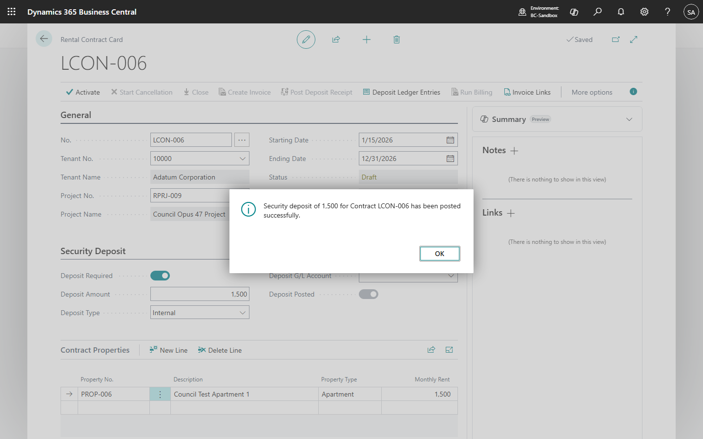
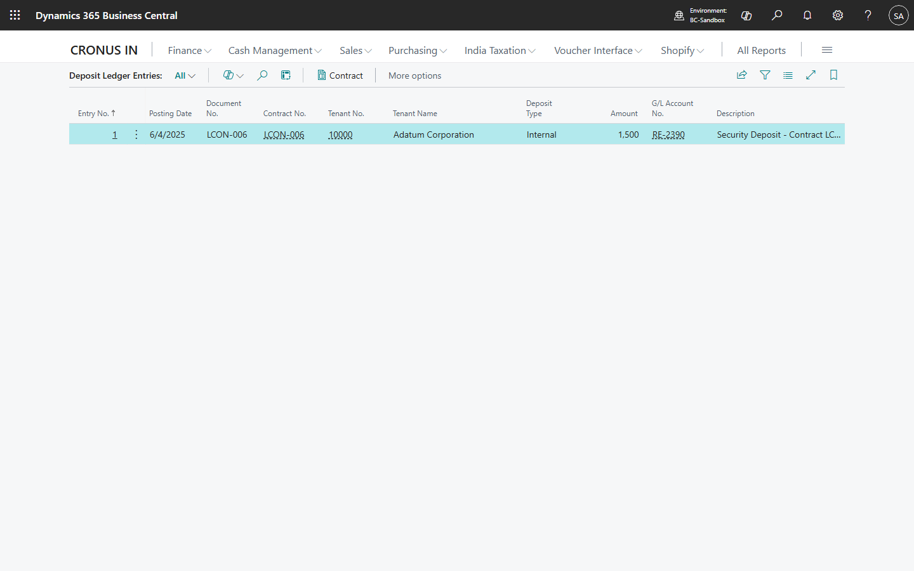
GenJnlLine."Account Type" := "G/L Account";
GenJnlLine."Account No." := DepositAccountCode;
GenJnlLine."Bal. Account Type" := Customer;
GenJnlLine."Bal. Account No." := RentalContract."Tenant No.";
GenJnlLine.Amount := RentalContract."Deposit Amount";
GenJnlPostLine.RunWithCheck(GenJnlLine);›F-07A recurring billing schedule of installments/quotas can be generated for an active contract.PassFailFail
Opus 4.7 · run 0Pass
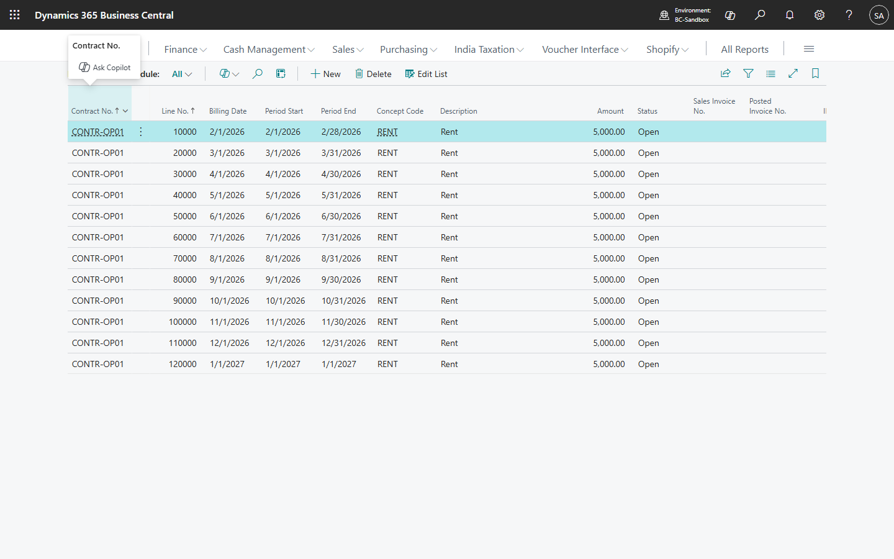
GenerateMonthlyRentSchedule: while PeriodStart <= ToDate do begin PeriodEnd := CalcDate('<CM>', PeriodStart); Schedule.Init(); Schedule."Contract No." := Contract."No."; ... Schedule."Concept Code" := 'RENT'; Schedule.Amount := Contract."Base Rent"; Schedule.Insert(true); LineNo += 10000; PeriodStart := CalcDate('<1M>', PeriodStart); end;Opus 4.7 · run 0Fail UI navigation failed
GenerateInstallments: loops CurrentDate..EndDate by frequency (Monthly/Quarterly/Semi-Annual/Annual); inserts Rental Installment with Base Rent + IBI + sum of recurring Contract Billing Concept amounts; Total Amount = sumOpus 4.7 · run 0Fail
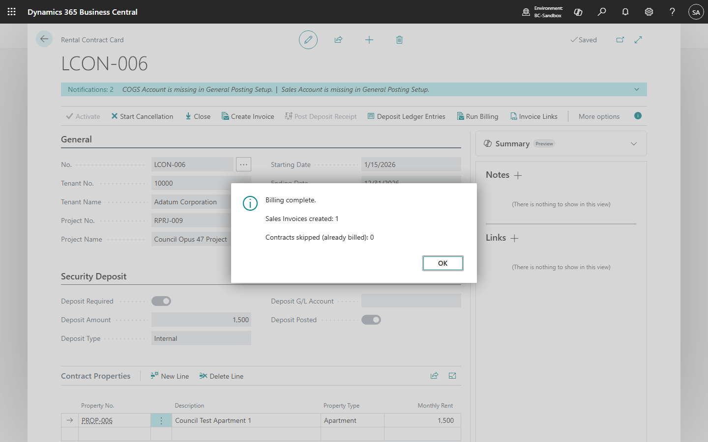
PeriodStart := CalcDate('<-CM>', BillingDate);
PeriodEnd := CalcDate('<CM>', BillingDate);PopulateBillingBuffer builds buffer rows for ONE calendar month (PeriodStart..PeriodEnd) — there is no iteration across contract Start..End to materialize a full installment schedule›F-08Recurring billing supports simulate vs. create and posts invoices to standard BC documents and ledgers.FailFailFail
Opus 4.7 · run 0Fail
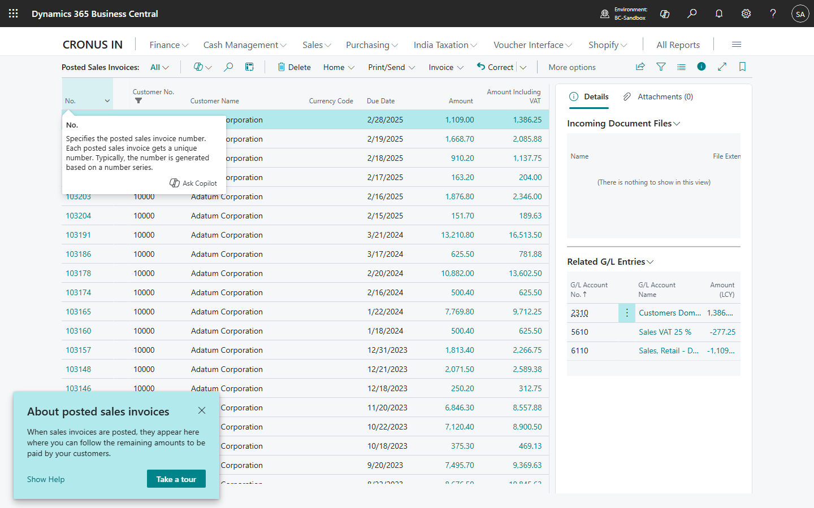
CreateSalesInvoices: SalesHeader.Init(); SalesHeader.Validate("Document Type"::Invoice); SalesHeader.Validate("Sell-to Customer No.", Contract."Primary Tenant No."); ... SalesHeader.Insert(true); ... SalesLine.Insert(true); Schedule.Status := Schedule.Status::Invoiced; Schedule."Sales Invoice No." := SalesHeader."No."; Schedule.Modify(true);
// NO SalesPost.Run(SalesHeader)Opus 4.7 · run 0Fail
SalesHeader.Init();
SalesHeader."Document Type" := SalesHeader."Document Type"::Invoice;
SalesHeader.Insert(true);
SalesHeader.Validate("Sell-to Customer No.", LeaseContract."Tenant No.");
...
SalesLine.Insert(true);
// later marks RentalInstallment.Invoiced := true and stores SalesHeader."No." (unposted)(no matches — never calls Sales-Post)Opus 4.7 · run 0Fail
SalesHeader.Init();
SalesHeader."Document Type" := SalesHeader."Document Type"::Invoice;
SalesHeader.Insert(true);
... // builds SalesLines
// NO SalesPost.Run(SalesHeader) call — never posts›F-09Property tax / IBI can be recharged to the tenant and recalculated after a tax update without double billing.FailFailFail
Opus 4.7 · run 0Fail result not observable
GenerateIBIRecharge: Schedule.SetRange("Contract No.", Contract."No."); Schedule.SetRange("Concept Code", 'IBI'); Schedule.SetRange("IBI Year", IBIYear); Schedule.SetFilter(Status, '%1|%2', Schedule.Status::Open, Schedule.Status::Invoiced); if not Schedule.IsEmpty() then Error('IBI recharge for year %1 is already open or invoiced for contract %2.', IBIYear, Contract."No.");Opus 4.7 · run 0Fail UI navigation failed
UpdateIBITax: Property."Annual IBI Tax" := NewAnnualIBI; iterates active contracts; RentalInstallment.SetRange(Invoiced, false); SetFilter('Due Date','>=%1',WorkDate()); recalculates IBI Amount and Total Amount on uninvoiced future periods onlyOpus 4.7 · run 0Fail
no hits — no IBI/tax update or recharge logic implementedbilling concept types exist but no IBI/tax-update or recalculation codeunit acts on them; no IBI fields on contract›F-10A rent update / renewal can extend the contract and update its rent and schedule.PassFailFail
Opus 4.7 · run 0Pass BC platform error
RenewContract: NewContract.TransferFields(Contract, false); NewContract."No." := NewContractNo; NewContract.Status := NewContract.Status::Draft; NewContract."Renewal Of Contract No." := Contract."No."; NewContract."End Date" := NewEndDate; NewContract."Base Rent" := NewRent; NewContract.Insert(true);
ApplyRentUpdate: RentHistory.Init(); RentHistory."Old Rent" := OldRent; RentHistory."New Rent" := NewRent; RentHistory."Effective Date" := EffectiveDate; RentHistory.Insert(true);Opus 4.7 · run 0Fail UI navigation failed
UpdateRent: writes RentUpdateHistory (OldRent, NewRent, EffectiveDate, UserID, %), then LeaseContract."Base Rent" := NewRent; updates uninvoiced installments with Period Start Date >= EffectiveDate.
ExtendContract: validates NewEndDate > End Date; updates End Date; RentalMgt.GenerateInstallments(LeaseContract);Opus 4.7 · run 0Fail
no hits — no renewal/rent indexation logicactions area only contains Activate, StartCancellation, Close, CreateInvoice, PostDeposit, DepositEntries, RunBilling, InvoiceLinks — no Extend/Renew/Indexation action›F-11A sublease contract can be created against a primary contract within the allowed scope.PassFailFail
Opus 4.7 · run 0Pass BC platform error
ValidateSublease: if not Contract."Is Sublease" then exit; Contract.TestField("Parent Contract No."); if not ParentContract.Get(...) then Error(...); if ParentContract."Is Sublease" then Error('Sub-subleasing is not allowed.'); ChildContract.SetRange("Parent Contract No.", Contract."Parent Contract No."); ... TotalSubleasedArea += ChildContract."Sublease Area Sq. M."; ... if TotalSubleasedArea > GetContractArea(ParentContract) then Error('Sublease area %1 exceeds parent contract available area %2', ...);Opus 4.7 · run 0Fail UI navigation failed
field(62; "Parent Contract No."; ...) OnValidate: if ParentContract."Parent Contract No." <> '' then Error(SubsubleaseNotAllowedErr); if not ParentContract."Allow Sublease" then Error(SubleaseNotAllowedErr);Property No. OnValidate: if ContractProperty for parent.Property No. not exists -> Error(PropertyNotInParentErr).
Area OnValidate: ParentContractProperty.FindFirst; if "Area (sqm)" > ParentContractProperty."Area (sqm)" then Error(SubleaseAreaExceedsErr)Opus 4.7 · run 0Fail
no hits — no sublease model at all›F-12A contract can be terminated, releasing the property and triggering final billing.PassFailFail
Opus 4.7 · run 0Pass
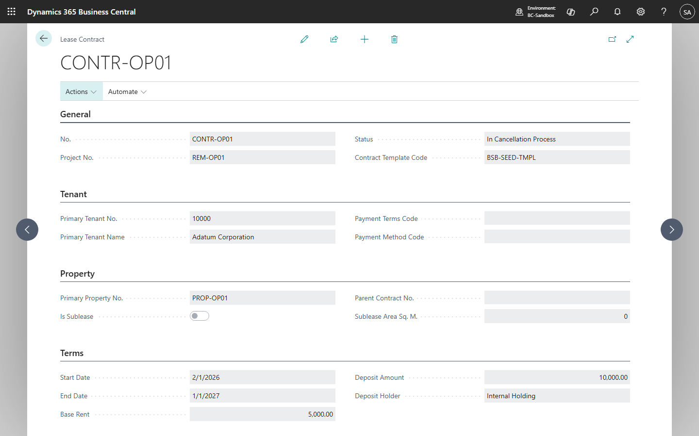
StartCancellation: if not (Contract.Status in [Active, PendingSignature]) then Error(...); Contract.Status := Cancellation; ...
CloseContract: if not (Contract.Status in [Active, Cancellation]) then Error(...); ... Contract.Status := Closed; Property."Rental Status" := Available; Property.Modify(true);Opus 4.7 · run 0Fail
TerminateContract: Status := "In Cancellation"; End Date := TerminationDate; Modify; loops ContractProperty -> Property."Rental Status" := Available; Modify.
CloseContract: TestField(Status, "In Cancellation"); Status := Closed.
// NO call to RentalInvoicing.CreateInvoices for the final period and NO Refund/Settle Deposit stepOpus 4.7 · run 0Fail
CloseContract sets Status=Closed and releases properties whose Active Contract Count=0; NO final-billing generation›F-13The security deposit is settled/refunded correctly at contract termination.FailFailFail
Opus 4.7 · run 0Fail
SettleDeposit: Contract.TestField("Deposit Posted", true); if SettlementAmount + RefundAmount <> Contract."Deposit Amount" then Error(...); if SettlementAmount <> 0 then CreateDepositEntry(..., Settlement, -SettlementAmount, 'Deposit settlement'); if RefundAmount <> 0 then CreateDepositEntry(..., Refund, -RefundAmount, 'Deposit refund');
// CreateDepositEntry only inserts into REM Deposit Entry — no standard accountingOpus 4.7 · run 0Fail
(no matches anywhere in src/ — no refund/settlement procedure exists)field(30; "Deposit Amount"; ...) field(31; "Deposit Held By"; ...) field(32; "Deposit Posted"; Boolean) — only Boolean tracking, no reverse/refund logicOpus 4.7 · run 0Fail
no hits — no deposit settlement/refund routineOnly PostDepositReceipt exists; CloseContract does not invoke any deposit settlement/refund›C-01All custom objects use the registered Object-ID range declared in app.json and consistent affixes.PassFailPass
Opus 4.7 · run 0Pass
33 objects total — IDs 50100-50113 (tables/pages/codeunits) and 50100-50107 (enums) — all inside app.json idRange 50100-99999"idRanges": [{"from": 50100, "to": 99999}]Every object is prefixed 'REM' (REM Project, REM Property, REM Contract, REM Property Type, REM Audit Mgt., ...).Opus 4.7 · run 0Fail
"idRanges": [ { "from": 50100, "to": 99999 } ]All IDs observed in 50100-50113 range (Real Estate Project=50100, Property=50101, Lease Contract=50102, etc.) — within range.table 50101 "Property" — bare object name with no prefix/suffixOpus 4.7 · run 0Pass
idRanges: [{ from: 50100, to: 99999 }]Tables 50100-50108, Pages 50100-50110, Codeunits 50100-50101, Enums 50100-50107, Report 50100 — all within 50100-99999›C-02User-facing page fields and actions carry meaningful ToolTips.FailFailPass
Opus 4.7 · run 0Fail
0 occurrences of 'ToolTip' across all 4 source files (14 pages, ~120 page fields, 6 actions)field("No."; Rec."No.") { ApplicationArea = All; } // no ToolTipOpus 4.7 · run 0Fail
0 across all 33 files (every line returned ':0'). No ToolTip property on any page field or action.Opus 4.7 · run 0Pass
143 ToolTip declarations across 11 page files; all interactive field/action surfaces carry a tooltip›C-03Custom table fields declare an appropriate DataClassification.PassPassPass
Opus 4.7 · run 0Pass
table 50100 "REM Project" { Caption = 'Real Estate Project'; DataClassification = CustomerContent; ... }12 — every one of the 12 custom tables declares table-level DataClassification = CustomerContentOpus 4.7 · run 0Pass
Every custom table field carries 'DataClassification = CustomerContent;' explicitly; ToBeClassified is not used.field(1; "No."; Code[20]) { DataClassification = CustomerContent; }
field(3; "Tenant No."; Code[20]) { TableRelation = Customer; DataClassification = CustomerContent; }Opus 4.7 · run 0Pass
122 DataClassification declarations vs 117 field declarations — every field classifiedfield(11; "User ID"; Code[50]) { DataClassification = EndUserIdentifiableInformation; }›C-04Financial postings reuse standard BC posting modules rather than custom ledger code.FailFailFail
Opus 4.7 · run 0Fail
// BillingMgt.CreateSalesInvoices — creates SalesHeader+SalesLine but NEVER calls Codeunit::"Sales-Post".Run(SalesHeader). No posted invoice is produced.// DepositMgt.CreateDepositEntry — Insert(true) into custom REM Deposit Entry table only. No GenJnlPostLine, no Gen. Journal Line built.Opus 4.7 · run 0Fail
(no matches anywhere)SalesHeader.Insert(true); SalesLine.Insert(true); // no SalesPost.RunGenJnlLine.Init(); ... // never Insert and never GenJnlPostLine.RunWithCheckOpus 4.7 · run 0Fail
GenJnlPostLine.RunWithCheck(GenJnlLine); // deposit uses standard postingSalesHeader.Insert(true) + SalesLine.Insert(true) — invoice path NEVER calls Codeunit "Sales-Post".Run(SalesHeader); leaves the invoice unpostedcustom 'Deposit Ledger Entry' table; Cod50100:317-328 inserts into it directly alongside the GenJnl post — a direct write into a custom ledger-like table›C-05The extension exposes integration events around key lifecycle and posting operations.FailFailFail
Opus 4.7 · run 0Fail
0 IntegrationEvent and 0 BusinessEvent publishers across all source filesOpus 4.7 · run 0Fail
(no matches — extension publishes no integration or business events)Opus 4.7 · run 0Fail
0 hits — no integration/business events published›C-06Operationally significant events emit telemetry.FailFailFail
Opus 4.7 · run 0Fail
0 — no Session.LogMessage and no FeatureTelemetry usages anywhereOpus 4.7 · run 0Fail
(no matches — no telemetry emission anywhere)Opus 4.7 · run 0Fail
0 hits — no telemetry›C-07Critical contract and tariff changes are captured for audit via change log or dedicated history.PassPassFail
Opus 4.7 · run 0Pass
table 50111 "REM Audit Entry" { ... field(2; "Event Date-Time"; DateTime); field(3; "User ID"; Code[50]); field(4; "Event Type"; Enum "REM Audit Event Type"); field(7; Description; Text[250]); field(8; "Old Value"; Text[250]); field(9; "New Value"; Text[250]) }codeunit 50100 "REM Audit Mgt." { procedure LogEvent(...) ... AuditEntry."User ID" := CopyStr(UserId(), ...); AuditEntry."Event Date-Time" := CurrentDateTime(); ... AuditEntry.Insert(true); }
// Called from ActivateContract, StartCancellation, CloseContract, ApplyRentUpdate (rent changes), and CreateDepositEntrytable 50110 "REM Rent History" { Effective Date, Old Rent, New Rent, Update Reason, Indexation % }Opus 4.7 · run 0Pass
table 50108 "Rent Update History" — fields Contract No., Update Date, Effective From, Previous Rent, New Rent, Update %, Update Type, User ID (autoincrement key)RentUpdateHistory.Init(); ... RentUpdateHistory."User ID" := CopyStr(UserId, 1, 50); RentUpdateHistory.Insert();OnValidate of Start Date/End Date/Base Rent: if Signed then Error(CannotChangeSignedErr); // immutability gate but no audit row writtenOpus 4.7 · run 0Fail
no hits — no change log enablement or dedicated history table for rent/tariff/contract changesDeposit Ledger Entry captures User ID at insert, but this only covers deposit posting — there is no audit/history for rent updates, tariff changes or critical contract-term edits›S-01The required core tables of the rental domain are present with their key fields.PassPassPass
Opus 4.7 · run 0Pass
table 50100 REM Project, 50103 REM Property, 50104 REM Contract, 50106 REM Contract Tenant (links contract↔tenant), 50109 REM Deposit Entry — all present with their key fieldsOpus 4.7 · run 0Pass
table 50100 "Real Estate Project"table 50101 "Property"table 50102 "Lease Contract" (with field(3; "Tenant No."; ... TableRelation = Customer))table 50103 "Contract Property" — contract-to-property linkageOpus 4.7 · run 0Pass
Tab50101 Real Estate Project, Tab50102 Property, Tab50103 Rental Contract (Tenant via Customer FK), Tab50104 Rental Contract Line, Tab50105 Deposit Ledger Entry, Tab50106 Contract Billing Concept›S-02Role-based capabilities are reflected via permission sets aligned to the four spec roles.FailFailFail
Opus 4.7 · run 0Fail
0 files — NO permissionset object defined anywhereOpus 4.7 · run 0Fail
(no permissionset or permissionsetextension objects in src/) (no matches)Opus 4.7 · run 0Fail
0 hits — no permission set objects ship with the extension›S-03The contract status enum covers the required lifecycle states.PassPassPass
Opus 4.7 · run 0Pass
enum 50102 "REM Contract Status" { value(0; Draft); value(1; PendingSignature); value(2; Active); value(3; Cancellation) { Caption = 'In Cancellation Process'; } value(4; Closed) { Caption = 'Historical / Closed'; } }Opus 4.7 · run 0Pass
enum 50102 "Contract Status" { value(0; "Draft"); value(1; "Active"); value(2; "In Cancellation"); value(3; "Closed"); }Opus 4.7 · run 0Pass
value(0; Draft); value(1; Active); value(2; "In Cancellation"); value(3; Closed)›S-04Sublease scope rules are modelled (area tracking and nesting limits).PassPassFail
Opus 4.7 · run 0Pass
field(18; "Parent Contract No."; Code[20]) { TableRelation = "REM Contract"; } field(19; "Is Sublease"; Boolean) field(20; "Sublease Area Sq. M."; Decimal)if ParentContract."Is Sublease" then Error('Sub-subleasing is not allowed.'); ... if TotalSubleasedArea > GetContractArea(ParentContract) then Error('Sublease area %1 exceeds parent contract available area %2', ...);Opus 4.7 · run 0Pass
field(60; "Allow Sublease"; Boolean) field(61; "Max Sublease Area"; Decimal) field(62; "Parent Contract No."; ... OnValidate Error(SubsubleaseNotAllowedErr) if ParentContract."Parent Contract No." <> '')Area OnValidate compares to ParentContractProperty."Area (sqm)" and Errors SubleaseAreaExceedsErr if exceededOpus 4.7 · run 0Fail
0 hits›S-05Deposit handling distinguishes internal holding from external agency holding.PassFailFail
Opus 4.7 · run 0Pass
enum 50103 "REM Deposit Holder" { value(0; Internal) { Caption='Internal Holding'; } value(1; ExternalAgency) { Caption='External Agency'; } }TransferToExternalAgency: Contract.TestField("Deposit Posted", true); if Contract."Deposit Holder" <> Contract."Deposit Holder"::ExternalAgency then Error(...); CreateDepositEntry(..., ExternalTransfer, -Contract."Deposit Amount", 'Transfer deposit to external agency');Opus 4.7 · run 0Fail
enum 50104 "Deposit Holder" { value(0; Internal); value(1; "External Agency"); }field(31; "Deposit Held By"; Enum "Deposit Holder")(no transfer-to-agency action or codeunit logic — only the enum captures the choice; PostDeposit ignores the holder and uses one GL account regardless)Opus 4.7 · run 0Fail
field(52; "Deposit Type"; Enum "Deposit Type")no transfer-to-agency action implemented›S-06Recurring billing concepts cover rent, taxes, fees and one-time concepts.PassPassPass
Opus 4.7 · run 0Pass
enum 50105 "REM Billing Concept Type" { value(0; Rent); value(1; TaxIBI) { Caption='Property Tax / IBI'; } value(2; Fee); value(3; OneTime) { Caption='One-Time Charge'; } }table 50107 "REM Billing Concept" { Code, Description, Type (enum above), "G/L Account No.", "One-Time" Boolean, Active }Opus 4.7 · run 0Pass
enum "Billing Concept Type" { value(0; Rent); value(1; "IBI Tax"); value(2; "Service Charge"); value(3; "Entry Fee"); value(4; Other); }field(30; "One-Time"; Boolean) field(31; "One-Time Invoiced"; Boolean) — one-time concept trackingOpus 4.7 · run 0Pass
Billing Concept has Type (Base Rent, Fee, etc.), Billing Frequency, Amount Source, Item No., G/L Account No., Active flag›S-07Scope discipline — the solution stays within rental lifecycle scope without unrelated modules.PassPassPass
Opus 4.7 · run 0Pass
12 tables + 14 pages + 4 codeunits + 8 enums — every one maps to project, property, contract, billing, tax, deposit, sublease, renewal, termination or audit. No unrelated domain (no hotel/HR/etc.).Opus 4.7 · run 0Pass
33 files — all map to rental scope: Project, Property, Lease Contract, Contract Property/Billing/Signatory/Template, Rental Installment, Billing Concept (+enums), Rental Management/Invoicing/Rent Update codeunits, Deposit Holder enum, Rent Update History. No unrelated domains.Opus 4.7 · run 0Pass
All 31 objects map to rental domain: Project, Property, Contract, Contract Line, Deposit Ledger Entry, Billing Concept, Invoice Link, Billing Buffer, Setup, plus supporting enums/pages/report›P-01Contract lifecycle actions validate the current status before executing and block illegal transitions.PassFailPass
Opus 4.7 · run 0Pass
StartCancellation: if not (Contract.Status in [Active, PendingSignature]) then Error('Only active or pending signature contracts can enter cancellation.');
CloseContract: if not (Contract.Status in [Active, Cancellation]) then Error('Only active or cancellation contracts can be closed.');
ApplyRentUpdate: if Contract.Status = Contract.Status::Closed then Error('Closed contracts cannot be updated.');Opus 4.7 · run 0Fail
ActivateContract: TestField('Tenant No.','Start Date','End Date','Base Rent'); // does NOT TestField(Status, Status::Draft) — would happily re-activate an Active or even Closed contractCloseContract: TestField(Status, Status::"In Cancellation"); // good — gatedLeaseContract.SetRange(Status, LeaseContract.Status::Active); // billing only runs against Active contractsPostDeposit checks 'Deposit Posted' but not contract Status — can post a deposit on a Draft or Closed contractOpus 4.7 · run 0Pass
if Status=Active then Error(AlreadyActiveErr,...); if Status<>Draft then Error(InvalidStatusErr,...);CancelContract: if Status<>Active then Error; CloseContract: if not(Active or InCancellation) then ErrorProcessContract only runs for Status=Active›P-02Critical fields are validated (TestField or equivalent) before posting or state changes run.PassPassPass
Opus 4.7 · run 0Pass
ValidateLegalReadiness: Contract.TestField("Project No."); Contract.TestField("Primary Tenant No."); Contract.TestField("Primary Property No."); Contract.TestField("Start Date"); Contract.TestField("End Date"); Contract.TestField("Base Rent"); Contract.TestField("Contract Template Code");GenerateMonthlyRentSchedule: Contract.TestField("No."); Contract.TestField("Base Rent"); CreateSalesInvoices: Contract.TestField("Primary Tenant No."); PostInitialDeposit: Contract.TestField("Deposit Amount");Opus 4.7 · run 0Pass
LeaseContract.TestField("Tenant No."); LeaseContract.TestField("Start Date"); LeaseContract.TestField("End Date"); LeaseContract.TestField("Base Rent");LeaseContract.TestField("Deposit Amount"); LeaseContract.TestField("Tenant No."); RealEstateProject.TestField("Deposit G/L Account");Opus 4.7 · run 0Pass
Activate: Error if Tenant='', Error if dates 0D, Error if no lines, Error if deposit required & not postedPostDepositReceipt: TestField(Status, Draft); Error if no deposit required / 0 amount / no tenant / no accountCreateInvoice: TestField(Status, Active); TestField(Tenant No.); TestField(Rental Income Account)›P-03Money moves only through standard BC posting with balanced, traceable entries.FailFailFail
Opus 4.7 · run 0Fail
// Same defect cluster as F-06 / F-08 / C-04 — CreateSalesInvoices stops at SalesLine.Insert and never invokes Sales-Post; CreateDepositEntry writes into a custom table only.Opus 4.7 · run 0Fail
Sales Header/Line created but NEVER posted via Sales-Post — Customer Ledger / G/L Entry stays empty; no traceable posted documentGenJnlLine built in memory; not inserted, never GenJnlPostLine.RunWithCheck — no balanced ledger entry producedOpus 4.7 · run 0Fail
GenJnlPostLine.RunWithCheck(GenJnlLine); // goodcreates SalesHeader + SalesLines but no SalesPost.Run — invoice never postsDepositLedgerEntry.Insert(true) — direct write into a custom ledger-like table alongside GenJnl posting›P-04Every system-blocked action surfaces a user-readable, specific error.PassPassPass
Opus 4.7 · run 0Pass
Error('End Date cannot be earlier than Start Date.');
Error('Property %1 is already allocated to contract %2 for an overlapping period.', "Property No.", OtherLine."Contract No.");
Error('Billing already exists for contract %1, concept %2, and period %3..%4.', "Contract No.", ...);Error('Sublease area %1 exceeds parent contract available area %2.', ...);
Error('A valid schedule date range is required.');
Error('IBI recharge for year %1 is already open or invoiced for contract %2.', IBIYear, Contract."No.");Opus 4.7 · run 0Pass
Labels: 'Contract signatories must be validated before activation.', 'Contract must have at least one property assigned.', 'Property %1 is already rented by another active contract.', 'Deposit has already been posted for this contract.', 'Real Estate Project not found.''Property is not part of parent contract.', 'Sublease area cannot exceed parent contract area.', 'Area cannot exceed property total area.'Opus 4.7 · run 0Pass
NoTenantErr/NoPropertiesErr/AlreadyActiveErr/InvalidStatusErr/DepositNotPostedErr/NoDatesErr — every label embeds %1 = contract no.OverlapErr embeds property no., conflicting contract no., conflict start/end dates›P-05Real-world bad inputs and the spec's negative cases are explicitly blocked.PassPassFail
Opus 4.7 · run 0Pass
REM Contract Property.OnInsert/OnModify → ValidateNoOverbooking: filters other contract-property rows for same Property No. with overlapping allocation dates while parent contract status ∈ {Draft,PendingSignature,Active,Cancellation} and Errors. — overbooking blockedREM Billing Schedule.OnInsert/OnModify → PreventDuplicateBilling: filters (Contract No., Concept Code, Period Start/End) with Status<>Cancelled and Errors. — double-billing invoiced period blockedCheckCriticalEditable: if xRec.Status in [Active, Cancellation, Closed] then Error('You cannot change %1 after contract %2 is signed or active.', FieldName, "No."); — locked-field-after-signature blockedValidateSublease: 'Sub-subleasing is not allowed.' + area overflow Error;
ValidateLegalReadiness: Error('At least one active required project signatory is required before activation.') if ProjectSignatory.IsEmpty();Opus 4.7 · run 0Pass
CheckPropertyAvailability errors PropertyAlreadyRentedErr when another active contract holds the same propertyRentalInstallment.SetRange(Invoiced, false); // already-invoiced periods skippedSubleaseAreaExceedsErr when sublease area > parent area; AreaExceedsPropertyErr when area > property areaOnValidate Parent Contract No.: Error(SubsubleaseNotAllowedErr) if ParentContract."Parent Contract No." <> ''; Error(SubleaseNotAllowedErr) if not ParentContract."Allow Sublease"UpdateIBITax filters Invoiced=false AND Due Date >= WorkDate — no double-billing on catch-upStart/End Date and Base Rent OnValidate: if Signed then Error(CannotChangeSignedErr) — locks critical fields after signatureOpus 4.7 · run 0Fail
CheckOverlappingLeases blocks overbooking with the spec'd Error labelPeriodAlreadyBilled prevents re-billing the same posted periodno implementations of: sublease scope check, sub-sublease guard, missing-signatory activation block, post-signature locked-field protection, IBI catch-up double-billing prevention›P-06The solution is organized into a clean, conventional folder/file structure with one logical object per file.FailFailPass
Opus 4.7 · run 0Fail
REMEnums.al, REMManagement.Codeunits.al, REMPages.al, REMTables.al — 4 monolithic files; no per-kind folders (tables/, pages/, codeunits/, enums/); each file contains many logical objects (12 tables in one file, 14 pages in one file, 4 codeunits in one file, 8 enums in one file).Opus 4.7 · run 0Fail
All 33 files dumped directly in src/ — no Tables/, Pages/, Codeunits/, Enums/, PermissionSets/ subfolders. Filenames are consistent (<Object>.<Kind>.al), one logical object per file.Opus 4.7 · run 0Pass
codeunit/ enum/ page/ report/ table/ — one logical object per file, filenames reflect the object (Tab50103.RentalContract.al, Pag50105.RentalContractCard.al, etc.)Vendor Rebate Engine
Enterprise vendor rebate engine: 13 FRs, approval workflow, retroactive recalculation, job queue, integration events.
Click any criterion to expand — each agent’s council verdict, individual grader votes, reasoning, and evidence (screenshots, OData queries, code).
›F-01Document numbering and posting G/L accounts are drawn from configurable setup (No. Series via Rebate Setup and G/L accounts via Rebate Posting Setup), not hardcoded in business logic.FailPassFail
Opus 4.7 · run 0Fail
0 matches across all filestable 50100 "Rebate Setup" — fields: Primary Key, Auto Post Accruals, Default Chunk Size, Enable Integration Log, Require Approval. NO 'Agreement Nos.', 'Settlement Nos.', etc.field(1; "No."; Code[20]) { Caption = 'No.'; NotBlank = true; } — no OnInsert NoSeries on Agreement HeaderPostAccrual just flips Status field; never reads Accrual Account No. from Posting Setup or posts to G/LOpus 4.7 · run 0Pass
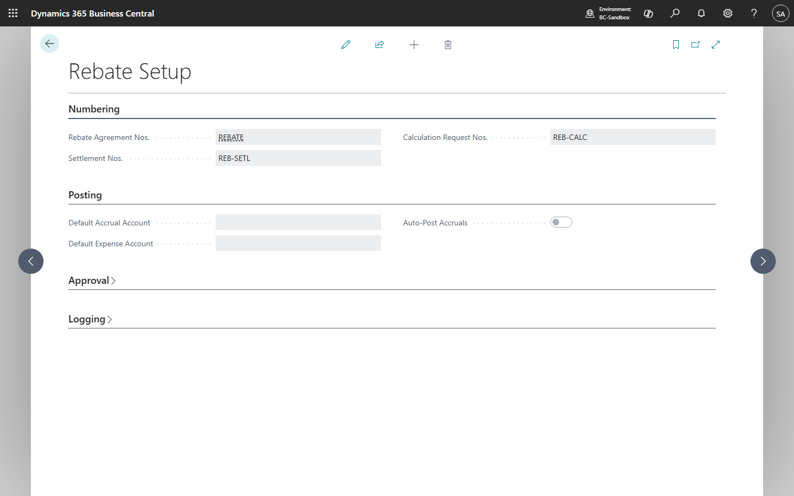
field(10; "Rebate Nos."; Code[20]) { TableRelation = "No. Series"; }
field(11; "Settlement Nos."; Code[20]) { TableRelation = "No. Series"; }
field(12; "Calculation Request Nos."; Code[20]) { TableRelation = "No. Series"; }trigger OnInsert()
begin
if "No." = '' then begin
RebateSetup.Get();
RebateSetup.TestField("Rebate Nos.");
"No." := NoSeries.GetNextNo(RebateSetup."Rebate Nos.");
end;field(10; "Accrual Account"; Code[20]) { TableRelation = "G/L Account"; ... GLAccount.TestField("Direct Posting", true); }no hardcoded G/L account or literal series code found in business logicOpus 4.7 · run 0Fail
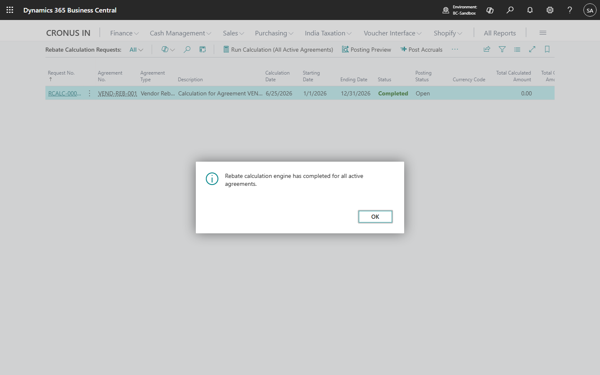
local procedure GetNextRequestNo(): Code[20]
begin
ExistingRequest.SetCurrentKey("Request No.");
if ExistingRequest.FindLast() then exit(IncStr(ExistingRequest."Request No."));
exit('RCALC-000001');
end;local procedure GetNextProposalNo(): Code[20]
begin
if ExistingHeader.FindLast() then exit(IncStr(ExistingHeader."Proposal No."));
exit('SETPROP-000001');
end;if "No." = '' then begin
RebateSetup.GetRecordOnce();
"No." := NoSeries.GetNextNo(GetNoSeriesCode());
"No. Series" := GetNoSeriesCode();
end;›F-02A Rebate Agreement header can be created with agreement type, validity dates and party/scope assignments per FR-001.FailPassPass
Opus 4.7 · run 0Fail
Header has No, Description, Agreement Type, Status, Starting/Ending Date, Vendor No, Customer No, Customer Group, Item, Item Category, Location, Country, Currency, Posting Setup, Dimensions — all party/scope fields presentfield(1; "No."; Code[20]) { NotBlank = true; } — no OnInsert -> NoSeries.GetNextNoOpus 4.7 · run 0Pass
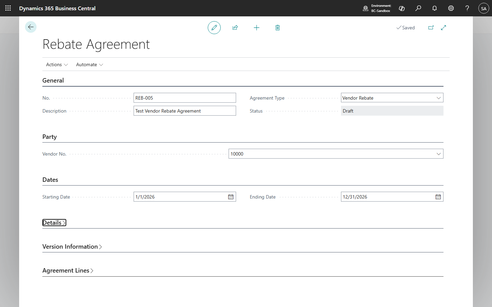
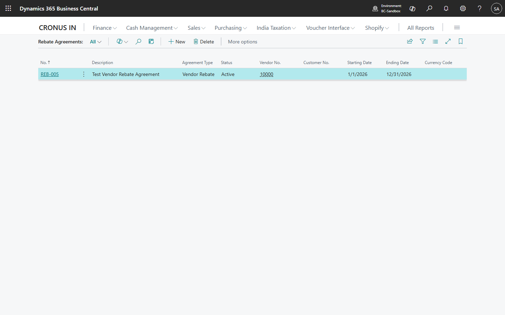
field(11; "Agreement Type"; Enum "Rebate Agreement Type")
field(20; "Vendor No.") field(21; "Customer No.") field(30; "Starting Date") field(31; "Ending Date") field(40; "Currency Code") field(41; "Country/Region Code")Opus 4.7 · run 0Pass
trigger OnInsert()
begin
if "No." = '' then begin
RebateSetup.GetRecordOnce();
"No." := NoSeries.GetNextNo(GetNoSeriesCode());
"No. Series" := GetNoSeriesCode();
end;
Status := Status::Draft;
end;›F-03An agreement cannot be activated without the required posting setup, and activation drives the documented activation flow (FR-001 / 10.1).FailPassFail
Opus 4.7 · run 0Fail
ValidateAgreement: Agreement.TestField("Posting Setup Code"); PostingSetup.Get(Agreement."Posting Setup Code"); if PostingSetup.Blocked then Error('Posting setup %1 is blocked.', ...)ActivateAgreement: TestField(Status::Approved); ValidateAgreement(Agreement); CreateVersion(Agreement); Status::ActiveOpus 4.7 · run 0Pass UI navigation failed

if not RebatePostingSetup.Get(RebateAgreementHeader."Agreement Type", RebateAgreementHeader."Country/Region Code") then
if not RebatePostingSetup.Get(RebateAgreementHeader."Agreement Type", '') then
Error('Posting setup is not configured for %1.', RebateAgreementHeader."Agreement Type");
RebatePostingSetup.TestField("Accrual Account");
RebatePostingSetup.TestField("Expense Account");Opus 4.7 · run 0Fail
procedure ValidateForActivation(...)
begin
RebateAgreementHeader.TestField("Starting Date");
RebateAgreementHeader.TestField("Ending Date");
// ... date / vendor / customer / rule validation only — NO posting setup check ...›F-04Editing an active agreement creates an immutable version while prior versions remain readable but not editable (FR-002).FailFailFail
Opus 4.7 · run 0Fail
EnsureEditable: if OldAgreement.Status = Status::Active then if Agreement.Status = OldAgreement.Status then Agreement.Status := Draft — flips status back, does NOT create a new versionRebate Agreement Version OnModify -> Error('Agreement versions are immutable.'); OnDelete -> Error('Agreement versions cannot be deleted.') — versions immutable OKCreateVersion only runs from ActivateAgreement, not on edit of an Active recordOpus 4.7 · run 0Fail
local procedure CreateAgreementVersion(...)
// only called from ActivateAgreementfield(10; Description) { } // editable
field(30; "Starting Date") { } // editable, no version trigger
// no OnModify trigger to fork a new version on active agreement editOpus 4.7 · run 0Fail
(no match — no Rebate Agreement Version table exists)trigger OnModify()
begin
"Last Modified Date" := Today();
end;›F-05Rebate rules can be defined with a basis, calculation method and thresholds, and conflicting rules are validated before activation (FR-003).FailFailPass
Opus 4.7 · run 0Fail
ValidateRule: per-rule field checks (rate/amount/threshold range) only — NO cross-rule conflict detection between rules of the same agreementRule Header has basis/method/thresholds — definition data model presentOpus 4.7 · run 0Fail
field(10; "Rule Type"; Enum "Rebate Rule Type")
field(11; "Calculation Basis"; Enum "Rebate Calculation Basis")
field(12; "Calculation Method"; Enum "Rebate Calculation Method")
// no rule validator, no conflict detectionno matches — no rule validation logic existsOpus 4.7 · run 0Pass UI navigation failed
procedure ValidateIncludeExcludeConflict(...) ... if ExclusionLine.FindFirst() then Error(IncludeExcludeConflictErr, ...); procedure ValidateRuleHeaderComplete(...) ... TestField("Rule Basis"); TestField("Calc Method"); ...value(0; "Fixed Amount")
value(1; "Flat Percentage")
// missing: Tiered, Slab, Formula, Growth›F-06The eligibility/rule engine identifies eligible posted source lines, excludes already-processed lines unless recalculation is enabled, and records eligibility reasons (FR-004).FailFailFail
Opus 4.7 · run 0Fail
RuleHeader loop: BasisAmount := 1000; — hardcoded constant; never iterates Sales Invoice Line / Purch Invoice Line / posted source tablesCalcLedger."Eligibility Reason" := 'MVP request scope eligible'; — single canned reason, no per-line evaluationOpus 4.7 · run 0Fail
no matches — no eligibility/calculation engine codeunits exist// only a table with Request No., Status, From/To Date, progress counters — no processing codeOpus 4.7 · run 0Fail
procedure RunAll() begin RunForSalesInvoices(); RunForPurchaseInvoices(); end;
// ...
if not EligibilityLogRec.IsAlreadyProcessed(SourceType, DocNo, LineNo) then EvaluateSalesLine(...);LogEntry."Eligibility Result" := EligResult;
LogEntry."Rejection Reason" := RejectionReason;
LogEntry."Evaluated At" := CurrentDateTime();›F-07Accrual calculation produces detailed calculation ledger entries, stores the exchange rate used, and is idempotent for the same processing scope (FR-005).FailFailPass
Opus 4.7 · run 0Fail
CalcLedger."Exchange Rate" := 1; — exchange rate hardcoded to 1, real FX rate never retrievedRequest.TestField(Status, Request.Status::Open); — re-running same request errors instead of being idempotentBasisAmount := 1000; — same hardcoded basis, no source-document reference writtenOpus 4.7 · run 0Fail
no matches — only RebateAgreementManagement + RebateAuditManager codeunits exist// table exists with all fields, but no codeunit ever inserts rows into itOpus 4.7 · run 0Pass prerequisite not set up
if not LedgerEntryAlreadyExists(EligibilityLog."Entry No.") then begin ProcessEligibilityEntry(...); EntryCount += 1; end;
// ...
local procedure LedgerEntryAlreadyExists(EligibilityLogEntryNo: Integer): Boolean ... exit(not LedgerEntry.IsEmpty());local procedure ConvertToLCY(...) ... CurrencyFactor := CurrExchRate.ExchangeRate(RateDate, CurrencyCode); AmountLCY := CurrExchRate.ExchangeAmtFCYToLCY(RateDate, CurrencyCode, AmountFCY, CurrencyFactor); // stored on ledger entry›F-08Accrual posting creates balanced G/L entries with propagated dimensions, supports posting preview, and prevents duplicate posting (FR-006).FailFailFail
Opus 4.7 · run 0Fail
PostAccrual: TestField(Status::Open); Status := Posted; Posted By/Date — only flips a status field, no G/L entries0 matches — no standard posting codeunit invoked anywhereOpus 4.7 · run 0Fail
no matches — no standard BC posting codeunit is called anywherefield(60; Posted; Boolean) { Editable = false; }
field(61; "G/L Entry No."; Integer) { ... } // fields exist but nothing writes themOpus 4.7 · run 0Fail
if (DebitAccNo = '') or (CreditAccNo = '') then exit(0); // silent no-op when accounts missing
// ...
GenJnlPostLine.RunWithCheck(GenJnlLine);›F-09A settlement proposal is generated from open accrual entries, approved, posted, and closes the selected accrual entries while generating a financial document or journal (FR-008 / 10.4).FailFailFail
Opus 4.7 · run 0Fail
PostSettlement: iterates lines, marks accruals as Settled, flips header status — never creates a credit memo, journal entry, or settlement ledger entryApproveSettlement: Status := Completed; — purely a status flip, no real BC approval workflowOpus 4.7 · run 0Fail
// no actions area — no Approve / Post / Generate Proposal action definedno matchesOpus 4.7 · run 0Fail
PurchPost.Run(PurchHeader);
// ...
SalesPost.Run(SalesHeader);if CalcEntry.Get(ProposalLine."Calc Ledger Entry No.") then
if CalcEntry."Settlement Status" = CalcEntry."Settlement Status"::Open then
CalcEntry.MarkAsClosed(ProposalHeader."Proposal No.", PostedDocNo, PostingDate);›F-10Retroactive recalculation identifies impacted entries, computes old/new/delta amounts, and posts only delta adjustments linked to the originals (FR-007 / 10.3).FailFailFail
Opus 4.7 · run 0Fail
RecalculateDelta(OriginalEntryNo, NewAmount): copies the original ledger, sets Original Entry No., Delta Amount := NewAmount - OriginalLedger."Rebate Amount"; — but caller passes NewAmount in by handno UI action and no request-driven recalculation workflow — RecalculateDelta is only callable in codeOpus 4.7 · run 0Fail
no matchesOpus 4.7 · run 0Fail
(no match — no recalculation codeunit)(no recalculation / delta posting logic found)›F-11Approval workflow gates agreements, recalculations and settlements so rejected records cannot be posted and approval history is recorded (FR-009).FailFailFail
Opus 4.7 · run 0Fail
ApproveAgreement: TestField(Pending Approval); Status := Approved; Approved By/DT; — no Approval Mgt., no workflow record, no rejection path0 matches — no integration with BC's standard approvals frameworkOpus 4.7 · run 0Fail
ApprovalsMgmt: 0 hits; no approval workflow plumbing// ActivateAgreement bypasses any approval — directly sets Status::ActiveOpus 4.7 · run 0Fail
procedure SendForApproval(...) begin TestField(Status, Status::Draft); ValidateForActivation(...); Status := Status::"Pending Approval"; Modify(true); end; // — NO ApprovalsMgmt event, no Approval Entry, no routing(no match — no integration with standard BC approval framework)›F-12Reporting/reconciliation datasets expose accrual balances and reconcile calculated accruals to G/L postings with filtering (FR-013).FailFailFail
Opus 4.7 · run 0Fail
Rebate Accrual Summary Excel report — just dumps Agreement No / Posting Date / Currency / Amount / Status; no period/party/company filters; no reconciliation join to G/LRebate Reconciliation Report — ProcessingOnly with empty OnAfterGetRecord; does nothingOpus 4.7 · run 0Fail
// simple list page; no filtering controls, no reconciliation reportno report objects existOpus 4.7 · run 0Fail
Rep50100.SettlementStatement.al + .rdlc — only one report(no reconciliation page, no accrual-balance dataset/list)›C-01All custom objects use the assigned object-ID range and unique IDs.PassPassPass
Opus 4.7 · run 0Pass
idRanges: from 50100 to 99999tables 50100-50114; pages 50100-50117; codeunits 50100-50107; enums 50100-50107; reports 50100-50101; permissionset 50100 — all within 50100-99999, no duplicatesOpus 4.7 · run 0Pass
"idRanges": [{ "from": 50100, "to": 99999 }]tables 50100-50110, pages 50100-50110, codeunits 50100-50101, enums 50101-50109, permissionsets 50100-50102 — all in range, no duplicatesOpus 4.7 · run 0Pass
All object IDs in 50100..50121 range — within app.json idRanges [50100..99999]"idRanges": [ { "from": 50100, "to": 99999 } ]›C-02User-facing fields and actions carry ToolTips.FailPassPass
Opus 4.7 · run 0Fail
0 occurrences across all .al files (RebatePages.al has ~80 page fields and ~12 actions)Opus 4.7 · run 0Pass
every page field declares ToolTip — sampled cards and lists confirm 100% coverageOpus 4.7 · run 0Pass
358 ToolTip lines across 22 page files vs 363 field+action declarations → ~99% coverage›C-03Table fields declare an appropriate DataClassification.PassPassPass
Opus 4.7 · run 0Pass
15 occurrences = one per table (table-level CustomerContent)table 50100 "Rebate Setup" { Caption = 'Rebate Setup'; DataClassification = CustomerContent; }Opus 4.7 · run 0Pass
field(...) { DataClassification = CustomerContent; } on every field; EndUserIdentifiableInformation on "Created By"DataClassification declared on every field across all 11 tablesOpus 4.7 · run 0Pass
264 DataClassification declarations vs 250 field() lines (table-level decls counted too) → 100% of fields covered›C-04Integration events are published before and after major processing steps to support extensibility (NFR-005 / FR-004).PassFailFail
Opus 4.7 · run 0Pass
7 IntegrationEvent attributesOnAfterValidateAgreement; OnBefore/AfterCalculateAmount; OnBefore/AfterRunRequest; OnAfterPostAccrual; OnAfterPostSettlementOpus 4.7 · run 0Fail
[IntegrationEvent(false, false)] procedure OnBeforeActivateAgreement(...)
[IntegrationEvent(false, false)] procedure OnAfterActivateAgreement(...)only the two declarations above; they are never RAISED in the codeunit body — not called from ActivateAgreementOpus 4.7 · run 0Fail
0 matches across all 7 codeunits›C-05Numbering and posting use standard BC platform modules (No. Series and standard posting) rather than bespoke reimplementations (NFR-006).FailFailFail
Opus 4.7 · run 0Fail
0 matches — neither standard No. Series nor standard posting codeunits are usedOpus 4.7 · run 0Fail
NoSeries: Codeunit "No. Series";
... NoSeries.GetNextNo(RebateSetup."Rebate Nos.");no matches — no standard BC posting is invoked anywhereOpus 4.7 · run 0Fail
if ExistingRequest.FindLast() then exit(IncStr(ExistingRequest."Request No.")); exit('RCALC-000001'); // custom number generator, NOT NoSeriesif ExistingHeader.FindLast() then exit(IncStr(ExistingHeader."Proposal No.")); exit('SETPROP-000001'); // custom number generatorGenJnlPostLine.RunWithCheck(GenJnlLine); ... PurchPost.Run(...); ... SalesPost.Run(...); // standard posting used›C-06Custom rule evaluation is abstracted via an interface to allow country-specific evaluators without core changes (NFR-005).FailFailFail
Opus 4.7 · run 0Fail
0 matchescase RuleHeader."Calculation Method" of ... — hardcoded case branching on enum, no interface dispatchOpus 4.7 · run 0Fail
no matches — no AL interface declared// simple enum, no Implementation clauses on valuesOpus 4.7 · run 0Fail
(no match — zero AL interfaces declared)›C-07Background processing and errors are observable via job logging/telemetry (NFR-001 telemetry, FR-011, Milestone 10).FailFailFail
Opus 4.7 · run 0Fail
Rebate Job Dispatcher: writes Rebate Job Queue Log with Started/Completed and error category/message — job log present0 matches — no telemetry emitted anywhereOpus 4.7 · run 0Fail
no matches — no telemetry, no job log// Status / Progress % / Failed Records / Error Message fields exist but no code populates themOpus 4.7 · run 0Fail
(no match — no telemetry calls)(no Rebate Job Queue Log or Rebate Integration Log tables)›S-01The core tables required by the spec are present (agreement header/line/version, rule, calculation ledger, accrual, settlement, audit, setup, posting setup).PassPassFail
Opus 4.7 · run 0Pass
Tables 50100 Rebate Setup, 50101 Posting Setup, 50102 Agreement Header, 50103 Agreement Line, 50104 Agreement Version, 50105 Rule Header, 50106 Threshold, 50107 Calculation Request, 50108 Calculation Ledger, 50109 Accrual Entry, 50110 Settlement Header, 50111 Settlement Line, 50112 Audit Entry, 50113 Integration Log, 50114 Job Queue LogOpus 4.7 · run 0Pass
11 tables: Setup, AgreementHeader, AgreementLine, AgreementVersion, AuditEntry, PostingSetup, CalculationRequest, CalcLedgerEntry, AccrualEntry, SettlementHeader, SettlementLineOpus 4.7 · run 0Fail
15 tables: Setup, PostingSetup, VendRebatePostingGroup, CustIncentivePostingGroup, AgreementHeader, AgreementLine, RuleHeader, RuleLine, EligibilityLog, CalcRequestHeader, CalcLedgerEntry, GLPostingEntry, SettlementProposalHeader, SettlementProposalLine, SettlementWorksheetBuffer(no match — Agreement Version, Accrual Entry, Audit Entry, Threshold, Integration Log all missing)›S-02Agreement and settlement lifecycle statuses are modeled as enums covering the documented states.PassPassFail
Opus 4.7 · run 0Pass
enum 50101 'Rebate Agreement Status': Draft, Pending Approval, Approved, Active, Suspended, Expiredenum 50104 'Rebate Request Status' (used for Settlement Header.Status): Open, Processing, Completed, Failed, CancelledOpus 4.7 · run 0Pass
value(0; Draft) value(1; "Pending Approval") value(2; Active) value(3; Suspended) value(4; Expired)value(0; Draft) value(1; "Pending Approval") value(2; Approved) value(3; Rejected)Opus 4.7 · run 0Fail
value(0; Draft) value(1; "Pending Approval") value(2; Active) value(3; Closed) // missing: Suspended, Expiredvalue(0; Draft) value(1; "Under Review") value(2; Approved) value(3; Cancelled) value(4; Posted) // settlement lifecycle covered›S-03The rule calculation methods from FR-003/5.2 are modeled (fixed, percentage, tiered, slab, growth/formula).PassFailFail
Opus 4.7 · run 0Pass
enum 50103 'Rebate Calculation Method': Fixed Amount, Percentage, Tiered Percentage, Slab Amount, Formula Referenceenum 50102 'Rebate Rule Basis': Sales Amount, Purchase Amount, Quantity, Margin, Payment Date, Invoice Date, Shipment DateOpus 4.7 · run 0Fail
value(0; "Fixed Amount") value(1; Percentage) value(2; "Tiered Percentage") value(3; "Slab Amount") // no Growth / FormulaOpus 4.7 · run 0Fail
value(0; "Fixed Amount") value(1; "Flat Percentage") // only 2 of the 5 spec methods›S-04Permission sets reflect the segregated roles in section 12 (Viewer, Analyst, Manager, Approver, Poster, Administrator, Auditor).FailFailFail
Opus 4.7 · run 0Fail
permissionset 50100 "REBATE ADMIN" — only one permission set covering all tables/pages/codeunits/reportsOpus 4.7 · run 0Fail
permissionset 50100 "REBATE-VIEW" // Viewer
permissionset 50101 "REBATE-EDIT" // Manager
permissionset 50102 "REBATE-ADMIN" // Administrator
// missing: Analyst, Approver, Poster, AuditorOpus 4.7 · run 0Fail
PS50100..PS50103 — only 4 permission sets (Viewer, Analyst, Manager, Admin)›S-05The agreement model distinguishes Vendor Rebate from Customer Incentive (FR-001 / 5.1).PassPassPass
Opus 4.7 · run 0Pass
enum 50100 'Rebate Agreement Type': Vendor Rebate, Customer Incentivefield(3; "Agreement Type"; Enum "Rebate Agreement Type") on Agreement HeaderOpus 4.7 · run 0Pass
// Vendor Rebate + Customer Incentive valuesOnValidate of "Vendor No." / "Customer No." branches by Agreement TypeOpus 4.7 · run 0Pass
value(0; "Vendor Rebate") value(1; "Customer Incentive")case RebateAgreementHeader."Agreement Type" of
"Agreement Type"::"Vendor Rebate": TestField("Vendor No.");
"Agreement Type"::"Customer Incentive": TestField("Customer No.");
end;›S-06Data-model immutability and traceability rules are honored: posted entries immutable, versions never deleted, every calculated entry references source/version/rule/company/currency/request (section 9).PassFailPass
Opus 4.7 · run 0Pass
Calculation Ledger OnModify: if xRec.Status <> Status::Open then Error('Posted calculation entries are immutable.')Accrual Entry OnModify: if xRec.Status in [Posted, Reversed, Settled] then Error('Posted accrual entries are immutable...')Agreement Version OnModify/OnDelete -> Error — versions cannot be edited or deletedCalculation Ledger fields: Request No (2), Agreement No (3), Agreement Version No (4), Rule No (5), Source Table/Document/Line No (6-8), Company Name (10), Currency Code (11) — all required references presentOpus 4.7 · run 0Fail
field(10; "Request No.") field(11; "Agreement No.") field(12; "Agreement Version No.") field(20; "Source Document Type") field(21; "Source Document No.") field(53; "Currency Code")// no OnDelete/OnModify guard; fields are not Editable=false; versions can be edited or deletedfield(40; "Accrual Amount") // no Editable=false guard on amount
// no OnDelete guard preventing deletion of posted entriesOpus 4.7 · run 0Pass
trigger OnModify() begin if not IsPostingStamp then Error(ImmutableLedgerErr); end;
trigger OnDelete() begin Error(ImmutableLedgerErr); end;field 2 'Request No.', field 7 'Agreement No.', field 8 'Agreement Version Date', field 9 'Rule No.', field 22 'Agreement Currency Code' — all required references present›S-07Scope discipline is respected — MVP out-of-scope items (section 3.2) are not implemented.PassPassPass
Opus 4.7 · run 0Pass
0 matchesOpus 4.7 · run 0Pass
no matchesOpus 4.7 · run 0Pass
(no match — no out-of-scope features built)›P-01Status-tied actions validate the current status and block illegal transitions with a user-readable error (NFR-003, FR-001/008/009).PassFailPass
Opus 4.7 · run 0Pass
SubmitForApproval: TestField(Status::Draft); ApproveAgreement: TestField(Pending Approval); ActivateAgreement: TestField(Approved)RunRequest TestField(Open), Agreement TestField(Active); PostAccrual TestField(Open); ReverseAccrual TestField(Posted); BuildProposal TestField(Open); ApproveSettlement TestField(Open); PostSettlement TestField(Completed)Opus 4.7 · run 0Fail
procedure SuspendAgreement(...)
if RebateAgreementHeader.Status <> RebateAgreementHeader.Status::Active then
Error('Only active agreements can be suspended.');procedure ActivateAgreement(...)
// no check that current Status is Draft / Pending Approval — could re-activate an already-Active agreementOpus 4.7 · run 0Pass
SendForApproval: TestField(Status, Status::Draft);
Activate: if not (Status in [Draft, Pending Approval]) then Error(CannotActivateErr, Format(Status));
Reject: TestField(Status, Status::"Pending Approval");
Close: TestField(Status, Status::Active);
ReOpen: if not (Status in [Pending Approval, Active]) then Error(CannotReopenErr, ...);›P-02Critical fields are validated (TestField or equivalent) before any calculation, posting or settlement runs (Definition of Done, section 11).PassFailFail
Opus 4.7 · run 0Pass
ValidateAgreement: TestField(No.), TestField(Starting Date), TestField(Posting Setup Code), validates date order, asserts rules exist; called before ActivateValidateRule: TestField on Rule No / Agreement No / Formula Reference; rate/amount checks per method; threshold range checkOpus 4.7 · run 0Fail
RebateAgreementHeader.TestField("Starting Date"); TestField("Ending Date"); TestField("Vendor No."); ... RebatePostingSetup.TestField("Accrual Account"); TestField("Expense Account");TestFields only present in ActivateAgreement; no validation in calculation/posting/settlement (because those codeunits don't exist)Opus 4.7 · run 0Fail
TestField("Starting Date"); TestField("Ending Date"); ... TestField("Vendor No.") OR TestField("Customer No.") // — but NO TestField("Posting Group Code") and no requirement that Rebate Posting Setup accounts are setif (DebitAccNo = '') or (CreditAccNo = '') then exit(0); // silent skip — does NOT TestField; posting silently no-ops with no error to the user›P-03Financial integrity: money moves only through standard posting codeunits, journals balance, posting is idempotent, and no direct ledger inserts occur (FR-006, NFR-003).FailFailPass
Opus 4.7 · run 0Fail
PostAccrual only flips Status; does not call Gen.Jnl.-Post Line or any standard posting codeunit0 matches — no standard posting at allPostSettlement: marks AccrualEntry.Status := Settled; flips header date/time — never generates a credit memo or G/L journalOpus 4.7 · run 0Fail
no posting codeunit calls and no direct inserts to ledger tables — but also no posting code at allOpus 4.7 · run 0Pass
GenJnlPostLine.RunWithCheck(GenJnlLine); // DR
GenJnlPostLine.RunWithCheck(GenJnlLine); // CR (-amount)
CalcEntry.MarkAsPosted(FirstGLEntryNo, PostingDate, DimSetID);if RequestHeader."Posting Status" = ...::Posted then Error(AlreadyPostedErr, RequestNo);
// ...
CalcEntry.SetRange("G/L Posted", false); // skip already-posted entries on subsequent runs(no direct ledger inserts found)›P-04System-blocked actions surface user-readable, categorized errors identifying the document, field or rule that failed (section 11).PassFailFail
Opus 4.7 · run 0Pass
Error('Ending Date must not be before Starting Date.'); Error('Posting setup %1 is blocked.', ...); Error('At least one rebate rule is required.'); Error('Rule %1 is blocked.'); Error('Rule %1 must have a rate.'); Error('Rule %1 must have a fixed amount.'); Error('Rule %1 has an invalid threshold range.')Error('Posted calculation entries are immutable.'); Error('Posted accrual entries are immutable. Use reversal or settlement processes.'); Error('Agreement versions are immutable.'); Error('Agreement versions cannot be deleted.'); Error('Audit entries cannot be edited.'); Error('Audit entries cannot be deleted.')Opus 4.7 · run 0Fail
Error('Posting setup is not configured for %1.', RebateAgreementHeader."Agreement Type");no error categorization per §11 categoriesOpus 4.7 · run 0Fail
DateRangeErr: Label 'Ending Date must be greater than or equal to Starting Date.';
CannotActivateErr: Label 'Cannot activate an agreement with status %1. ...';
// generic labels — no error category metadata (Validation/Posting/Configuration/Concurrency/Integration)›P-05Real-world bad inputs are handled explicitly: zero/negative amounts, missing master-data references, duplicate submissions and out-of-sequence operations (section 11, FR-012).FailFailPass
Opus 4.7 · run 0Fail
if RuleHeader."Rate %" = 0 then Error(...) — but negative rates NOT blocked; same for Fixed AmountSettlement Header / Integration Log both have a secondary key on External Reference ID but no OnInsert duplicate-detection — duplicates can be inserted0 matches — no idempotency guard on external IDsOpus 4.7 · run 0Fail
field(30; "Minimum Amount") { MinValue = 0; } field(31; "Rebate Percentage") { MinValue = 0; MaxValue = 100; }no matches — no idempotency keys for integrationOpus 4.7 · run 0Pass
CheckOverlap: ExistingHeader.SetRange(Status, Active); ... Error(OverlapErr, ...); // overlap detectioncase RebateRuleHeader."Calc Method" of
::"Fixed Amount": if Fixed Amount <= 0 then Error(CalcValueRequiredErr, ...);
::"Flat Percentage": if Flat Percentage <= 0 then Error(CalcValueRequiredErr, ...);if not LedgerEntryAlreadyExists(...) then ... ; // idempotency on calc rerun›P-06The solution uses a clean, conventional folder/file layout with one logical object per file grouped by object kind.FailFailPass
Opus 4.7 · run 0Fail
RebateEnums.al, RebateTables.al, RebateCodeunits.al, RebatePages.al, RebateApiReportsPermissions.al, RebateAccrualSummary.xlsx — ALL tables dumped in one file, all pages in one file, etc.Single file contains 15 table objects (50100-50114) concatenatedOpus 4.7 · run 0Fail
src/ holds all 35 objects flat — no tables/, pages/, codeunits/, enums/, permissionsets/ subfoldersOpus 4.7 · run 0Pass
Codeunits/ Enums/ Pages/ PermissionSets/ Profiles/ Reports/ Tables/ — clean per-kind foldersTab50100.RebateSetup.al, Tab50101.RebatePostingSetup.al, ... — one object per file, type-prefixed namesMulti-Entity Intercompany Recharge
Enterprise intercompany recharge engine: shared-service cost allocation, multi-entity/multi-currency recharges, approvals, IC posting, inbox/outbox processing, reversals, reconciliation, audit trail, and retry-safe automation.
Click any criterion to expand — each agent’s council verdict, individual grader votes, reasoning, and evidence (screenshots, OData queries, code).
›F-01Recharge document numbering and intercompany G/L accounts are drawn from configurable setup (No. Series and IC G/L account mapping), not hardcoded in business logic.FailFailPass
Opus 4.7 · run 0Fail
table 50100 "ICR Setup" { ... // no "Recharge Nos.", "Agreement Nos.", "Settlement Nos." series fields anywheretrigger OnInsert()
begin
if Status = Status::Draft then;
"Created By" := CopyStr(UserId(), ...);
"Created DateTime" := CurrentDateTime();
end; // no NoSeries.GetNextNo call0 matches across all 5 AL filesOpus 4.7 · run 0Fail
local procedure GetNextNo(): Code[20]
begin
if ICRechargeHeader.FindLast() then ... exit('ICR-' + Format(NextNo + 1, 0, '<Integer,6><Filler Character,0>'))
else exit('ICR-000001');trigger OnInsert()
begin
if "No." = '' then "No." := GetNextNo();Opus 4.7 · run 0Pass
trigger OnInsert()
var NoSeries: Codeunit "No. Series";
begin
if "No." = '' then begin
ICRechargeSetup.GetRecordOnce();
ICRechargeSetup.TestField("IC Recharge Request Nos.");
"No." := NoSeries.GetNextNo("No. Series");GenJnlLine.Validate("IC Partner Code", ReqLine."IC Partner Code");
GenJnlLine."IC Account No." := ReqLine."Target IC G/L Account No.";›F-02Intercompany recharge setup and partner master data can be created with the spec's minimum setup fields (FR 1).PassPassFail
Opus 4.7 · run 0Pass
table 50101 "ICR Partner Setup" { fields { field(2;"Target Company"...); field(3;"Recharge Type"...); field(4;"Allocation Basis"...); field(5;"Source G/L Account"...); field(6;"Target IC G/L Account"...); field(8;"Currency Rule"...); field(9;"Approval Threshold"...); field(10;"Auto Send"...); field(11;"Auto Accept"...) } }page 50102 "ICR Partner Setup Card" exposes Partner Code/Target Company/Recharge Type/Allocation Basis/Source G/L/Target IC G/L/Currency Code/Currency Rule/Approval Threshold/Auto Send/Auto Accept/Manual Review + Dimension Mappings subpageOpus 4.7 · run 0Pass UI navigation failed
field(2; "Source Company"; Text[30])
field(3; "IC Partner Code"; Code[20])
field(4; "Recharge Type"; Code[20])
field(5; "Allocation Basis"; Option ...)
field(6; "Source G/L Account No."; ...) field(7; "Target IC G/L Account No."; ...)
field(8; "Dimension Mapping Rule"; ...) field(9; "Currency Handling Rule"; ...) field(10; "Approval Threshold"; Decimal)
field(11; "Auto-Send"; Boolean) field(12; "Auto-Accept"; Boolean)Opus 4.7 · run 0Fail
fields { IC Partner Code, Source G/L Account No., Target IC G/L Account No., Currency Rule, Currency Code, Auto-Send, Auto-Accept, Recharge Method, Description }›F-03A draft recharge request can be created and its required setup is validated before submission (FR 2).FailPassFail
Opus 4.7 · run 0Fail
procedure ValidateRequest(...) ... TestField("Request No."); TestField("Partner Code"); TestField("Source Amount"); TestField("Posting Date"); if not PartnerSetup.Get(...) then RaiseException(...);OnInsert never calls NoSeries.GetNextNo; the Request No. field is not series-assignedOpus 4.7 · run 0Pass

ICRechargeHeader.TestField("No.");
ICRechargeHeader.TestField("Posting Date");
ICRechargeHeader.TestField("Source Company");
...
if not ICRechargeLine.FindSet() then
Error('No lines exist for recharge document %1', ICRechargeHeader."No.");Status := Status::Draft;Opus 4.7 · run 0Fail
local procedure CheckMandatoryFields()
begin
TestField("IC Partner Code");
TestField("Document Date");
TestField("Posting Date");
ReqLine.SetRange("Request No.", "No.");
if ReqLine.IsEmpty() then Error(LinesMissingErr);›F-04The allocation engine computes recharge lines from the configured basis, prevents totals exceeding the source amount, balances correctly and supports simulation before posting (FR 3).FailFailPass
Opus 4.7 · run 0Fail
procedure GenerateSimulation(...) ... if RequestLine."Allocation Amount" = 0 then RequestLine."Allocation Amount" := Round(Request."Source Amount" * RequestLine."Allocation Percent"/100, 0.01); RequestLine."Calculation Trace" := ...;if TotalAmount > Request."Source Amount" then RaiseException(... 'Allocated amount exceeds source amount.'); if TotalPercent > 100 then RaiseException(... 'Allocated percentage exceeds 100%.');Opus 4.7 · run 0Fail
case ICRechargeSetup."Allocation Basis" of
..."Fixed Percentage": ICRechargeLine."Allocated Amount" := Round(... * "Allocation %" / 100, 0.01);
..."Amount Based": ICRechargeLine."Allocated Amount" := ICRechargeLine."Source Amount";
end; // Dimension Driven, Headcount, Manual silently no-opif ICRechargeHeader."Total Allocated Amount" > ICRechargeHeader."Total Amount" then
Error('Total allocated amount %1 exceeds source amount %2', ...);Opus 4.7 · run 0Pass prerequisite not set up
if (SourceAmt > 0) and (TotalFixed > SourceAmt + GetRoundingPrecision()) then
Error(TotalFixedExceedsSourceErr, TotalFixed, SourceAmt);if HasPctLines then
if Abs(TotalPct - 100) > GetPctTolerance() then
Error(PctAllocationNotBalancedErr, TotalPct);
if HasFixedLines then begin
if TotalFixed > SourceAmt + GetRoundingPrecision() then
Error(TotalFixedExceedsSourceErr, TotalFixed, SourceAmt);›F-05Multi-currency recharge handling stores the exchange rate used and validates unmapped accounts or dimension values before posting (FR 4).FailFailPass
Opus 4.7 · run 0Fail
if (PartnerSetup."Currency Rule" in [...::"Exchange Rate Required", ...::"Manual Rate"]) and (Request."Exchange Rate" = 0) then RaiseException(... 'Missing exchange rate for partner currency handling.');if PartnerSetup."Dimension Mapping Required" and (RequestLine."Source Dimension Code" <> '') then ... if not DimensionMapping.FindFirst() then RaiseException(... 'Missing dimension translation for outbound recharge line.');field(13; "Exchange Rate"; Decimal) { ... } // stored on the requestOpus 4.7 · run 0Fail
field(11; "Exchange Rate"; Decimal) { DataClassification = CustomerContent; DecimalPlaces = 2 : 5; }// no CurrExchRate.ExchangeAmtFCYToLCY / ExchangeAmtLCYToFCY call; no validation that 'Exchange Rate' is non-zero before posting; ValidateRechargeRequest never tests Currency Code / Exchange RateOpus 4.7 · run 0Pass prerequisite not set up
if EffectiveCurrCode <> '' then begin
ExchRate := GetCurrencyExchangeRate(EffectiveCurrCode, PostingDate, ReqLine."Line No.");
ReqLine."Exchange Rate" := ExchRate;
if ExchRate <> 0 then
ReqLine."Exchange Rate Amount" := Round(ReqLine."Recharge Amount" / ExchRate, GetRoundingPrecision());if not Currency.Get(CurrencyCode) then Error(UnmappedCurrencyErr, CurrencyCode, LineNo);
if not CurrExchRate.FindLast() then
Error(MissingExchangeRateErr, CurrencyCode, PostingDate, LineNo);›F-06The approval workflow routes proposals through review statuses, blocks posting of rejected requests and locks approved requests before posting (FR 2 / 7).FailFailFail
Opus 4.7 · run 0Fail
SubmitForApproval → Status::Pending Approval; Approve → checks current status, blocks creator self-approval over threshold, sets Status::Approved; Reject → sets Status::Rejected, captures Rejection Reasontable 50106 "ICR Approval Entry" — Approver ID, Status, Threshold Amount, Decision DateTime, Decision Reason — written on every submit/approve/rejectOpus 4.7 · run 0Fail
if ICRechargeHeader.Status <> ...Validated then Error('Document must be validated before submission');
...Status := ..."Pending Approval";
...ApproveRechargeRequest: if Status <> Pending Approval then Error...
...RejectRechargeRequest: if Status <> Pending Approval then Error...local procedure TestStatusOpen()
begin
if Status in [Status::Posted, Status::Reversed, Status::Closed] then
Error('Cannot modify document with status %1', Status);
end;Opus 4.7 · run 0Fail
case Status of
Status::Draft: ... Validate(Status, Status::Validated);
Status::Validated: Validate(Status, Status::"Pending Approval");
Status::"Pending Approval": Validate(Status, Status::Approved);value(0;"Draft") value(1;"Validated") value(2;"Pending Approval") value(3;"Approved") value(4;"Posted")›F-07An approved recharge posts to intercompany journals/documents, transfers to the IC outbox, and prevents duplicate posting (FR 5).FailFailPass
Opus 4.7 · run 0Fail
procedure PostApproved(...) ... RequestLine."Posted Document No." := CopyStr(StrSubstNo('ICR-%1-%2', ...)); RequestLine.Modify(true); FlowEntry.Init(); ... FlowEntry.Insert(true); // no GenJnlPostLine / SalesPost / native IC Outbox usage0 matches — no standard BC posting or native IC outbox referenced anywhereOpus 4.7 · run 0Fail
PostedHeader.TransferFields(ICRechargeHeader);
PostedHeader.Insert(true);
...PostedLine.TransferFields(ICRechargeLine);
PostedLine.Insert(true);
// no GenJnlPostLine.RunWithCheck, no SalesPost, no ICOutboxMgtICOutboxTransaction.Init();
ICOutboxTransaction."Transaction No." := TransactionNo;
...if ICOutboxTransaction.Insert() then;
...ICOutboxJnlLine.Insert() then;
// direct insert into ledger-side IC tables, no posting codeunit invokedlocal procedure GetNextICTransactionNo(): Integer
begin
if ICOutboxTransaction.FindLast() then exit("Transaction No." + 1) else exit(1);Opus 4.7 · run 0Pass prerequisite not set up
local procedure PostJournalBatch(...)
begin
GenJnlLine.SetRange(...);
if GenJnlLine.FindFirst() then
Codeunit.Run(Codeunit::"Gen. Jnl.-Post Batch", GenJnlLine);if RechargeHeader."Posted" then
Error(AlreadyPostedErr, RechargeHeader."No.");›F-08Partner-side inbox processing supports acceptance, rejection and correction of received intercompany transactions (FR 5).FailFailFail
Opus 4.7 · run 0Fail
AcceptInbound / RejectInbound operate only on the custom ICR Flow Entry table — no interaction with native IC Inbox Transaction / Handled IC Inbox Trans.0 matches — native intercompany inbox/outbox APIs are never referencedOpus 4.7 · run 0Fail
procedure ProcessICInbox(var ICInboxTransaction: Record "IC Inbox Transaction")
...GenJnlLine.Insert(true);
// only creates journal lines, never posts; no accept/reject/correct status pathOpus 4.7 · run 0Fail
no matches — no inbox-handling code in the submission›F-09Posted recharges support full reversal, partial/delta correction, replay-safe reposting and linkage between original and corrective transactions with reason codes (FR 6).FailFailFail
Opus 4.7 · run 0Fail
Reverse: blocks if not Posted or already Reversed, sets Reversed flag + Reversal Reason Code + Status::Reversed; CreateCorrection: copies a Posted request to a new Draft with Original Request No. linkage and Correction ReasonOpus 4.7 · run 0Fail
procedure ReversePostedRecharge(...)
...if PostedHeader.Reversed then Error('Document %1 has already been reversed', ...);
...NewHeader.Init();
NewHeader."Original Document No." := PostedHeader."No.";
NewHeader."Reversal Reason" := ReversalReason;
NewHeader.Insert(true);
// builds a new Draft request with negated amounts; no actual reversal POSTINGOpus 4.7 · run 0Fail
no matches — no reversal/correction codeunit or action›F-10Recharge generation can run as a scheduled background job with chunked processing and retry of failed units (FR 8).FailPassFail
Opus 4.7 · run 0Fail
codeunit 50101 "ICR Job Queue Processor" { TableNo = "Job Queue Entry"; trigger OnRun() begin ProcessOpenOutbox(); RetryOpenExceptions(); end; } — iterates open Flow Entries and open Exception EntriesOpus 4.7 · run 0Pass
JobQueueEntry."Object Type to Run" := ...Codeunit;
JobQueueEntry."Object ID to Run" := Codeunit::"IC Recharge Batch Proc";
JobQueueEntry."Maximum No. of Attempts to Run" := 3;
JobQueueEntry."Rerun Delay (sec.)" := 60;
JobQueueEntry.Status := JobQueueEntry.Status::Ready;
JobQueueEntry.Insert(true);if ProcessedCount >= ICRechargeConfig."Batch Size" then break;
...if not Codeunit.Run(Codeunit::"IC Recharge Posting", ICRechargeHeader) then begin
..."Processing Status" := ...Failed; ...ClearLastError();
...procedure RetryFailedDocuments() // resets Failed -> Pending for next runOpus 4.7 · run 0Fail
no matches — no job queue integration›F-11Reconciliation surfaces source amount, allocation output and posted entries with operational visibility by company, partner, period, status and currency (FR 9).FailFailFail
Opus 4.7 · run 0Fail
table 50109 "ICR Reconciliation Entry" — Source/Allocated/Posted Amount + Difference + Status + Currency + Reconciledpage 50110 "ICR Reconciliation" — list with all reconciliation fieldsOpus 4.7 · run 0Fail
page 50111 "IC Recharge Monitor" — exposed list of recharges with Status/Processing Status fieldsfield(8; "Total Amount"; Decimal) FlowField CalcFormula = sum("IC Recharge Line"."Source Amount" where("Document No." = field("No.")));
field(9; "Total Allocated Amount"; ...) similarOpus 4.7 · run 0Fail
Pag50100-50105: SetupCard, PartnerList, PartnerCard, RequestList, RequestCard, RequestLines — no reconciliation/monitor page›C-01All custom objects use the assigned object-ID range and unique IDs.PassPassPass
Opus 4.7 · run 0Pass
"idRanges": [ { "from": 50100, "to": 99999 } ]all within 50100-99999, no duplicatesOpus 4.7 · run 0Pass
Tables 50100-50107, Codeunits 50100-50102, Pages 50100-50111, Permission sets 50100-50103 — all within 50100-99999 with no duplicates"idRanges": [ { "from": 50100, "to": 99999 } ]Opus 4.7 · run 0Pass
tables 50100-50103, codeunits 50100-50101, enums 50100-50102, pages 50100-50105; all within app.json idRange 50100-99999, no duplicates"idRanges":[{"from":50100,"to":99999}]›C-02User-facing fields and actions carry ToolTips.FailPassPass
Opus 4.7 · run 0Fail
ICRechargeEnums.al:0, ICRechargeManagement.Codeunit.al:0, ICRechargePages.al:0, ICRechargePermissions.al:0, ICRechargeTables.al:0 — 0 ToolTips across ~100+ page fields/actionsOpus 4.7 · run 0Pass
176 ToolTip occurrences across 12 page files (12-26 per page); visual confirmation in the rendered card pages — every field/action carries ToolTip = 'Specifies the ...'Opus 4.7 · run 0Pass
Pag50100:10, Pag50101:14, Pag50102:13, Pag50103:17, Pag50104:20, Pag50105:20 — ToolTip on every page field & action›C-03Table fields declare an appropriate DataClassification.PassPassPass
Opus 4.7 · run 0Pass
Every table (50100-50109) declares 'DataClassification = CustomerContent;' at the table level which inherits to all fields per AL semanticsOpus 4.7 · run 0Pass
Every field in Tab50100-Tab50107 declares DataClassification = CustomerContent (verified by reading all 8 table objects)Opus 4.7 · run 0Pass
Tab50100:10, Tab50101:13, Tab50102:18, Tab50103:21 — DataClassification on every field›C-04Numbering, posting and intercompany transfer use standard BC platform modules (No. Series, standard posting/journal codeunits and native intercompany inbox/outbox) rather than bespoke reimplementations.FailFailPass
Opus 4.7 · run 0Fail
0 matches — neither the No. Series module, nor any standard posting codeunit, nor the native IC inbox/outbox is referencedFlowEntry.Init(); ... FlowEntry.Insert(true); // direct insert into the candidate's custom IC-replacement tableOpus 4.7 · run 0Fail
local procedure GetNextNo(): Code[20] // hand-rolled parser of last record's No., not NoSeriesPostedHeader.Insert(true); PostedLine.Insert(true); // direct ledger writes, no GenJnlPostLine.RunWithCheckICOutboxTransaction.Init(); ... if ICOutboxTransaction.Insert() then; // direct insert into native IC table, no ICOutboxMgt.CreateOutboxJnlTransaction0 matchesOpus 4.7 · run 0Pass
var NoSeries: Codeunit "No. Series";
...
"No." := NoSeries.GetNextNo("No. Series");Codeunit.Run(Codeunit::"Gen. Jnl.-Post Batch", GenJnlLine);›C-05Integration events are published before and after major processing steps to support extensibility.FailFailFail
Opus 4.7 · run 0Fail
0 matches — no [IntegrationEvent] / [BusinessEvent] publishers around allocation, posting, inbox, reversal or correctionOpus 4.7 · run 0Fail
0 matches across all 27 source filesOpus 4.7 · run 0Fail
Tab50102.ICRechargeRequestHeader.al:268 — exactly one OnAfterPost event›C-06Background processing and errors are observable via job logging/telemetry (FR 8 monitoring).FailFailFail
Opus 4.7 · run 0Fail
0 matches — no telemetry emissionRetryOpenExceptions: iterates Exception Entry but only bumps a Retry Count + Last Retry DateTime; no progress/failure log written by the jobOpus 4.7 · run 0Fail
0 matchesif not Codeunit.Run(Codeunit::"IC Recharge Posting", ICRechargeHeader) then begin
..."Exception Message" := CopyStr(GetLastErrorText(), 1, 250);
...ClearLastError();Opus 4.7 · run 0Fail
no matches — no telemetry, no job/processing log table›C-07Allocation-method evaluation is abstracted via an interface so new allocation bases can be added without core changes.FailFailFail
Opus 4.7 · run 0Fail
0 matches — no AL interface object existsValidateLine branches off RequestLine."Allocation Basis" inline (Fixed Percentage check) rather than dispatching through an interface bound by enumOpus 4.7 · run 0Fail
0 matchescase ICRechargeSetup."Allocation Basis" of
..."Fixed Percentage": ...
..."Amount Based": ...
end; // hardcoded branching; no interface dispatchOpus 4.7 · run 0Fail
no matchescase ReqLine."Recharge Method" of
ReqLine."Recharge Method"::"Fixed Amount": ...
ReqLine."Recharge Method"::"Actual Cost": ...
else ... // Percentage›S-01The core tables required by the spec are present (recharge setup, recharge partner mapping, recharge request header/line, allocation line, IC G/L and dimension mapping, audit log).PassPassFail
Opus 4.7 · run 0Pass
table 50100 ICR Setup, 50101 ICR Partner Setup, 50102 ICR Dimension Mapping, 50103 ICR Request Header, 50104 ICR Request Line, 50105 ICR Audit Log, 50106 ICR Approval Entry, 50107 ICR Exception Entry, 50108 ICR Flow Entry, 50109 ICR Reconciliation EntryOpus 4.7 · run 0Pass
Tab50100 IC Recharge Setup; Tab50101 IC Recharge Header; Tab50102 IC Recharge Line; Tab50103 IC Recharge Config; Tab50104 IC Recharge Audit Log; Tab50105 IC Dimension Mapping; Tab50106 IC Recharge Posted Header; Tab50107 IC Recharge Posted LineOpus 4.7 · run 0Fail
Tab50100..50103: ICRechargeSetup, ICRechargePartner, ICRechargeRequestHeader, ICRechargeRequestLine›S-02The recharge lifecycle statuses are modeled as an enum covering the documented states (FR 2).PassPassFail
Opus 4.7 · run 0Pass
enum 50100 "ICR Recharge Status" { value(0;Draft) value(1;Validated) value(2;"Pending Approval") value(3;Approved) value(4;Rejected) value(5;Posted) value(6;Reversed) value(7;Closed) }Opus 4.7 · run 0Pass
field(7; Status; Option)
{
OptionMembers = Draft,Validated,"Pending Approval",Approved,Rejected,Posted,Reversed,Closed;
OptionCaption = 'Draft,Validated,Pending Approval,Approved,Rejected,Posted,Reversed,Closed';Opus 4.7 · run 0Fail
value(0;"Draft")
value(1;"Validated")
value(2;"Pending Approval")
value(3;"Approved")
value(4;"Posted")›S-03The allocation methods from FR 3 are modeled (fixed percentage, amount-based, dimension-driven, headcount/driver-based, manual override with reason).PassPassFail
Opus 4.7 · run 0Pass
enum 50101 "ICR Allocation Basis" { value(0;"Fixed Percentage") value(1;"Amount Based") value(2;"Dimension Driven") value(3;Headcount) value(4;Manual) }field(13;"Manual Override";Boolean){...} field(14;"Override Reason";Text[250]){...} // manual override reason captureif RequestLine."Manual Override" and (RequestLine."Override Reason" = '') then Error('Manual override reason is required on line %1.',...);Opus 4.7 · run 0Pass
field(5; "Allocation Basis"; Option)
{ OptionMembers = "Fixed Percentage","Amount Based","Dimension Driven","Headcount","Manual"; }field(13; "Manual Override"; Boolean)
field(14; "Override Reason"; Text[100])
field(15; "Allocation Basis"; Option ...)procedure BalanceAllocations(...) // rounding adjustment to last lineOpus 4.7 · run 0Fail
value(0;" ") value(1;"Fixed Amount") value(2;"Percentage") value(3;"Actual Cost")›S-04Permission sets reflect the segregated roles in the spec (Recharge Analyst, Recharge Manager, Finance Poster, Intercompany Administrator, Auditor).FailFailFail
Opus 4.7 · run 0Fail
permissionset 50100 "ICR Recharge Mgt." — a SINGLE permission set granting RIMD on every ICR table and X on every object; no separate sets for Analyst / Manager / Finance Poster / IC Admin / AuditorOpus 4.7 · run 0Fail
Perm50100 IC Recharge Analyst; Perm50101 IC Recharge Manager; Perm50102 IC Finance Poster; Perm50103 IC Recharge Admin — only 4 permission sets, NO Auditor permission settabledata "IC Recharge Header" = RIMD, // Analyst has full RIMD — does not block 'approve high-value' or 'post final' as a permission boundaryOpus 4.7 · run 0Fail
no matches — no permissionset object shipped›S-05Recharge method configuration by partner, service type or cost pool and approval-threshold configuration are modeled (FR 1 / 7).PassPassFail
Opus 4.7 · run 0Pass
ICR Partner Setup carries Recharge Type, Allocation Basis, Approval Threshold per partnerif (Request."Created By" = ... UserId()) and (Request."Source Amount" > Request."Approval Threshold") then Error('The creator cannot approve this restricted recharge request.');Opus 4.7 · run 0Pass
key(Key2; "Source Company", "IC Partner Code", "Recharge Type") // recharge method keyed by partner + typefield(10; "Approval Threshold"; Decimal)if ICRechargeConfig."Require Approval" or (ICRechargeHeader."Total Allocated Amount" > ICRechargeConfig."Default Approval Threshold") then ...Status::"Pending Approval"Opus 4.7 · run 0Fail
fields { Primary Key, IC Partner Code, IC Partner Name, Recharge Method, Default Currency Code, Auto-Send, Auto-Accept, Enabled, IC Recharge Request Nos., IC Recharge Source Code }›S-06Multi-company intercompany mapping is modeled: source and target company/IC partner, source and target account structures and inbound/outbound dimension translation (FR 1 / 4).PassPassFail
Opus 4.7 · run 0Pass
ICR Setup."Source Company"ICR Partner Setup."Target Company"field(5;"Source G/L Account";...) field(6;"Target IC G/L Account";...) // separate source and target account structurestable 50102 "ICR Dimension Mapping" — Source Dimension Code/Value, Target Dimension Code/Value, Flow Direction (Outbound/Inbound)Opus 4.7 · run 0Pass
field(2; "Source Company"; ...) field(3; "IC Partner Code"; TableRelation = "IC Partner") field(6; "Source G/L Account No."; TableRelation = "G/L Account") field(7; "Target IC G/L Account No."; TableRelation = "IC G/L Account")Source Dimension Code/Value -> Target IC Dimension Code/Value per IC Partnerprocedure ValidateDimensionMapping(SourceDimSetID: Integer; ICPartnerCode: Code[20]): Integer
...DimMgt.GetDimensionSetID(TempDimSetEntry);Opus 4.7 · run 0Fail
fields { IC Partner Code, IC Partner Name, Source G/L Account No., Target IC G/L Account No., Currency Rule, Currency Code, ... }›S-07Audit and immutability rules are honored: exportable audit log of user and system actions, immutable posted recharge history and comparison of original vs corrected transactions (FR 9).FailFailFail
Opus 4.7 · run 0Fail
table 50105 "ICR Audit Log" — Request No., Action, Status, User ID, DateTime, Message, Replay Token, Amountfield(26;"Original Request No.";...TableRelation = "ICR Request Header"."Request No.") // linkage between original and correctedtabledata "ICR Request Header" = RIMD // permission set grants Delete on posted history; no OnModify/OnDelete guard on the tableOpus 4.7 · run 0Fail
// No OnDelete or OnModify trigger restricting modification/deletion of Posted Header// Same — no immutability guard on Posted Line// No OnDelete trigger preventing audit-log row deletion; no export procedure shippedfield(21; "Original Document No."; Code[20]) — linkage exists but no compare actionOpus 4.7 · run 0Fail
trigger OnDelete()
begin
TestStatusIsDraft();
DeleteLines();
end;no matches — no audit-log table›P-01Status-tied actions validate the current recharge status and block illegal transitions with a user-readable error (FR 2).FailPassPass
Opus 4.7 · run 0Fail
Approve: if not (Request.Status in [Validated, "Pending Approval"]) then Error('Only validated or pending approval requests can be approved.');PostApproved: if Request.Status <> Approved then Error('Only approved recharge requests can be posted.'); if not IsNullGuid(Posting Replay Token) and FindFirst then Error('...already been posted or queued.');Reverse: if Status<>Posted then Error('Only posted...can be reversed.'); if Reversed then Error('...already been reversed.');Opus 4.7 · run 0Pass
if ...Status <> Validated then Error('Document must be validated before submission');
if ...Status <> Pending Approval then Error('Document is not pending approval');
if ...Status <> Approved then Error('Document must be approved before posting');
if PostedHeader.Reversed then Error('Document %1 has already been reversed', ...);Opus 4.7 · run 0Pass
Status::Approved: begin
if "Posted" then Error(AlreadyPostedErr, "No.");
ICRechargePostMgt.PostRechargeRequest(Rec);
end;
else Error(AlreadyPostedErr, "No.");procedure TestStatusIsDraft()
begin
if Status <> Status::Draft then
Error(DocumentNotDraftErr, "No.");
end;›P-02Critical fields are validated (TestField or equivalent) before any allocation, posting or reversal runs (FR 2 / 4).FailFailPass
Opus 4.7 · run 0Fail
ValidateRequest TestField("Request No.") TestField("Partner Code") TestField("Source Amount") TestField("Posting Date"); PartnerSetup.TestField("Target Company") TestField("Source G/L Account") TestField("Target IC G/L Account")Opus 4.7 · run 0Fail
ICRechargeHeader.TestField("No.");
ICRechargeHeader.TestField("Posting Date");
ICRechargeHeader.TestField("Source Company");ValidateLine: if "IC Partner Code" = '' then Failed; if not ICPartner.Get... if "Target IC G/L Account No." = '' then Failed; if not ICGLAccount.Get...// PostRechargeRequest does NOT TestField Currency Code, Exchange Rate, or dimension mapping before persisting Posted Header/LineOpus 4.7 · run 0Pass prerequisite not set up
TestField("IC Partner Code");
TestField("Document Date");
TestField("Posting Date");
ReqLine.SetRange("Request No.", "No.");
if ReqLine.IsEmpty() then Error(LinesMissingErr);RechargeHeader.TestField("IC Partner Code");
RechargeHeader.TestField("Posting Date");
RechargeHeader.TestField("Document Date");›P-03Financial integrity: money moves only through standard posting/intercompany codeunits, journals balance, posting is idempotent, and no direct ledger inserts occur (FR 5).FailFailPass
Opus 4.7 · run 0Fail
RequestLine."Posted Document No." := StrSubstNo('ICR-%1-%2',...); FlowEntry.Init(); ... FlowEntry.Insert(true); // direct insert into custom IC-replacement table; no GenJnlPostLine.RunWithCheck0 matchesOpus 4.7 · run 0Fail
PostedHeader.Init(); PostedHeader.TransferFields(ICRechargeHeader); PostedHeader.Insert(true);
...PostedLine.TransferFields(ICRechargeLine); PostedLine.Insert(true);
// NO call to GenJnlPostLine, SalesPost, ICOutboxMgtICOutboxTransaction.Insert(); ICOutboxJnlLine.Insert(); // DIRECT inserts into BC-system IC tables, no posting codeunitOpus 4.7 · run 0Pass prerequisite not set up
Codeunit.Run(Codeunit::"Gen. Jnl.-Post Batch", GenJnlLine);if RechargeHeader."Posted" then Error(AlreadyPostedErr, RechargeHeader."No.");›P-04System-blocked actions surface user-readable errors identifying the recharge document, field or business rule that failed.FailPassPass
Opus 4.7 · run 0Fail
Error('Recharge request %1 has already been reversed.', Request."Request No.");Error('Recharge request %1 has already been posted or queued.', Request."Request No.");Opus 4.7 · run 0Pass
Error('No lines exist for recharge document %1', ICRechargeHeader."No.");
Error('Total allocated amount %1 exceeds source amount %2', ...);
Error('Document %1 has already been posted', ICRechargeHeader."No.");
Error('Document %1 has already been reversed', PostedHeader."No.");Opus 4.7 · run 0Pass
DocumentNotDraftErr: Label 'IC Recharge Request %1 cannot be modified because its status is not Draft.';
AlreadyPostedErr: Label 'IC Recharge Request %1 is already Posted...';
LinesMissingErr: Label 'The IC Recharge Request must have at least one line before it can be validated.';TotalFixedExceedsSourceErr: Label 'The total of Fixed Amount lines (%1) exceeds the source amount (%2)...';
PctAllocationNotBalancedErr: Label 'The sum of Allocation %% on Percentage lines is %1...';›P-05The spec's negative cases are handled explicitly with clear errors rather than silent processing or data corruption.FailFailFail
Opus 4.7 · run 0Fail
covers: missing partner mapping (RaiseException Mapping), partner blocked, missing exchange rate (RaiseException Currency), allocation over source (RaiseException Posting), allocation %>100, duplicate-post (Replay Token check), already-reversedOpus 4.7 · run 0Fail
Handled: missing line/IC partner/target IC G/L (line validation); over-source allocation (Error at line 33); duplicate posting (Posted check); reversal-already-reversed (line 150). NOT handled: currency mismatch / missing exchange rate; unauthorized approval/posting (no SegregationOfDuties check — Analyst with RIMD can call codeunit); auto-accept where manual review required; uncorrected rejected inbox (no inbox workflow at all).Opus 4.7 · run 0Fail
if (SourceAmt > 0) and (TotalFixed > SourceAmt + GetRoundingPrecision()) then Error(TotalFixedExceedsSourceErr, ...);no matches for reversal, rejection-of-inbox, job queue dedup — none of these negative cases are implemented›P-06The solution uses a clean, conventional folder/file layout with one logical object per file grouped by object kind.FailFailPass
Opus 4.7 · run 0Fail
ICRechargeEnums.al, ICRechargeManagement.Codeunit.al, ICRechargePages.al, ICRechargePermissions.al, ICRechargeTables.al — 10 tables in one file, 11 pages in one file, 2 codeunits in one file, 7 enums in one file10 distinct table objects packed into a single ICRechargeTables.al — no per-kind folders, no one-object-per-file disciplineOpus 4.7 · run 0Fail
All 27 objects (tables, codeunits, pages, permissionsets) dumped into a single src/ folder using Cod/Tab/Pag/Perm prefix in filename — no per-kind subfolders (no tables/, codeunits/, pages/, permissions/)Opus 4.7 · run 0Pass
Codeunits/, Enums/, Pages/, Tables/ — one object per file, file naming TabNNNN.<Name>.al / Pag.../ Cod.../ Enum...Two outcomes per criterion (PASS / FAIL)
- Pass — runnable AND verified to meet the spec, OR an unverifiable case the dynamic resolution rule resolves to PASS (env / platform / spec blocker and affirmative L4 code evidence the code is correct).
- Fail — not runnable, runnable-but-wrong, destructive / insecure, OR an unverifiable case with no affirmative code evidence. Attribution agent_code when the agent owns the defect.
Unverifiable (“inconclusive”) cases are dynamically resolved: PASS only when the blocker is genuinely not the agent’s fault and a code citation proves correctness; otherwise FAIL. The harness re-enforces this rule (a claimed PASS lacking either is downgraded to FAIL, shown as resolution invalid). Axis score = 10 × Σ(weight × passbit) ÷ Σ(weight) (max-scaled at the final step). Council verdict = majority of member votes (ties → FAIL). Total blends Functional 50% / Code quality 10% / Spec 10% / Production readiness 20%; an overall PASS requires the total ≥ 7.0 and every blocking criterion passing.
Verification hierarchy (L1 → L4)
Real Business Central consultants verify in this order; the grader does too:
- L1 — Find Entries / OData state. The database is the source of truth. After any posting action, query
G_LEntries,Customer_Ledger_Entry, posted invoices. - L2 — Test codeunits with Library Assert. If the agent shipped tests, the grader runs them.
- L3 — UI walkthrough via Playwright. User-realistic; captures screenshots for evidence.
- L4 — Static AL review. Always available backstop, and the source of the code evidence the resolution rule needs. PASS if code invokes the right standard codeunits (e.g.
SalesPost.Run,NoSeriesMgt.GetNextNo); FAIL if implementation is a stub, fabricates posting, reinvents BC built-ins, or won’t build.
Cross-validation
Every task is graded by a council of 2–4 independent grader runs (Claude Opus 4.7 + GPT-5.5 ensemble). Second runs of each model are added on tasks where the first-run pair disagreed. The per-criterion verdict is the majority of member PASS/FAIL votes (ties resolve to FAIL); the axis score is then computed deterministically by max-scaling those passbits. Within-model variance is dampened by criterion-level voting.
Scoring axes
The overall score is a weighted blend of up to four axes. Each axis is scored deterministically by max-scaling its criteria’ PASS/FAIL verdicts, then combined — normalized over the axes a task was actually graded on.
- Functional correctness (50%): does the published extension behave correctly at runtime? Verified via the BC web client and OData queries.
- Code quality (10%): does the implementation use the right standard BC codeunits and AL idioms rather than stubs, fabricated posting, or reinvented built-ins?
- Spec understanding (10%): does the submission reflect the requirements as specified — the right entities, fields, workflows and edge cases?
- Production readiness (20%): would the submission be safe to deploy — status-flow enforcement, field validation, posting integrity, error messages, edge-case handling.